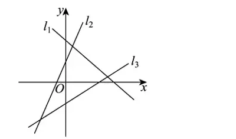
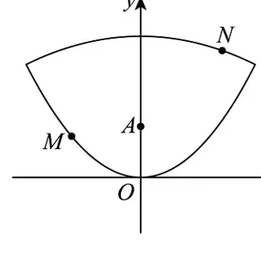
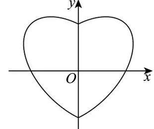

<meta data-alternate="https://freshmark.sunisalex.org/en/" data-article="true" data-canonical="https://freshmark.sunisalex.org/posts/math/2027-dxyz-weekly-test-08/" data-description="北京市大兴区第一中学 2027 届数学周测试题（八）全套试题与官方标准答案解析，涵盖直线方程、对称变换、圆的几何性质、椭圆、双曲线、抛物线等解析几何综合题型。" data-freshmark-page data-title="大兴一中 2027 届高二数学周测试题（八）标准参考答案与全解 — Freshmark"><main><header class="container article-header"><a href="/" class="back-link">← 返回全部文章</a><p class="eyebrow article-subject">数学</p><h1>大兴一中 2027 届高二数学周测试题（八）标准参考答案与全解</h1><p class="article-dek">北京市大兴区第一中学 2027 届数学周测试题（八）全套试题与官方标准答案解析，涵盖直线方程、对称变换、圆的几何性质、椭圆、双曲线、抛物线等解析几何综合题型。</p><div class="article-meta"><time datetime="2026-11-11">2026年11月11日</time><span>23 分钟阅读</span><span>数学 · 解析几何 · 大兴一中 · 周测试题</span><span class="view-count" data-article-view-count hidden>本文访问量 <strong data-article-views></strong></span><a href="index.md" download>下载 Markdown</a><button type="button" class="article-share" data-share-article data-share-text="北京市大兴区第一中学 2027 届数学周测试题（八）全套试题与官方标准答案解析，涵盖直线方程、对称变换、圆的几何性质、椭圆、双曲线、抛物线等解析几何综合题型。" data-share-title="大兴一中 2027 届高二数学周测试题（八）标准参考答案与全解"><span data-share-label>分享文章</span></button><output aria-live="polite" class="visually-hidden" data-share-status role="status"></output></div></header><div class="article-wrap"><aside class="toc"><div class="toc-head"><p>本文目录</p><button type="button" class="toc-toggle" aria-expanded="false" aria-label="展开或收起目录" data-toc-toggle><span class="toc-toggle-label">目录</span><span class="toc-toggle-icon" aria-hidden="true"></span></button></div><nav aria-label="目录" class="toc-links" data-toc-links><a href="#第一部分参考答案速查表" class="toc-level-2">第一部分：参考答案速查表</a><a href="#1-单选题答案第-1-35-题" class="toc-level-3">1. 单选题答案（第 1 ~ 35 题）</a><a href="#2-填空题答案第-36-40-题" class="toc-level-3">2. 填空题答案（第 36 ~ 40 题）</a><a href="#第二部分试题原题与详尽解析" class="toc-level-2">第二部分：试题原题与详尽解析</a><a href="#一单选题第-1-10-题直线方程与位置关系" class="toc-level-3">一、单选题（第 1 ~ 10 题）：直线方程与位置关系</a><a href="#二单选题第-11-20-题对称变换与圆的性质" class="toc-level-3">二、单选题（第 11 ~ 20 题）：对称变换与圆的性质</a><a href="#三单选题第-21-30-题圆与圆锥曲线基础" class="toc-level-3">三、单选题（第 21 ~ 30 题）：圆与圆锥曲线基础</a><a href="#四单选题第-31-35-题曲线综合与压轴探究" class="toc-level-3">四、单选题（第 31 ~ 35 题）：曲线综合与压轴探究</a><a href="#五填空题第-36-40-题相切几何性质与离心率" class="toc-level-3">五、填空题（第 36 ~ 40 题）：相切、几何性质与离心率</a></nav></aside><article class="prose"><blockquote><p><strong>试卷编号</strong>：85961133<br><strong>试卷性质</strong>：大兴一中 2027 届数学周测试题（八）<br><strong>试卷满分</strong>：100.0 分（共 40 题：单选题 35 道，非选择题 5 道）<br><strong>PDF 附件下载</strong>：<a href="./%E5%A4%A7%E5%85%B4%E4%B8%80%E4%B8%AD%E5%91%A8%E6%B5%8B8.pdf">大兴一中周测8.pdf</a></p></blockquote><hr><h2 id="第一部分参考答案速查表">第一部分：参考答案速查表</h2><h3 id="1-单选题答案第-1-35-题">1. 单选题答案（第 1 ~ 35 题）</h3><table><thead><tr><th style="text-align:center">题号</th><th style="text-align:center"><a href="#q1">1</a></th><th style="text-align:center"><a href="#q2">2</a></th><th style="text-align:center"><a href="#q3">3</a></th><th style="text-align:center"><a href="#q4">4</a></th><th style="text-align:center"><a href="#q5">5</a></th><th style="text-align:center"><a href="#q6">6</a></th><th style="text-align:center"><a href="#q7">7</a></th><th style="text-align:center"><a href="#q8">8</a></th><th style="text-align:center"><a href="#q9">9</a></th><th style="text-align:center"><a href="#q10">10</a></th></tr></thead><tbody><tr><td style="text-align:center"><strong>答案</strong></td><td style="text-align:center"><strong>D</strong></td><td style="text-align:center"><strong>D</strong></td><td style="text-align:center"><strong>C</strong></td><td style="text-align:center"><strong>B</strong></td><td style="text-align:center"><strong>B</strong></td><td style="text-align:center"><strong>C</strong></td><td style="text-align:center"><strong>A</strong></td><td style="text-align:center"><strong>A</strong></td><td style="text-align:center"><strong>C</strong></td><td style="text-align:center"><strong>B</strong></td></tr></tbody></table><table><thead><tr><th style="text-align:center">题号</th><th style="text-align:center"><a href="#q11">11</a></th><th style="text-align:center"><a href="#q12">12</a></th><th style="text-align:center"><a href="#q13">13</a></th><th style="text-align:center"><a href="#q14">14</a></th><th style="text-align:center"><a href="#q15">15</a></th><th style="text-align:center"><a href="#q16">16</a></th><th style="text-align:center"><a href="#q17">17</a></th><th style="text-align:center"><a href="#q18">18</a></th><th style="text-align:center"><a href="#q19">19</a></th><th style="text-align:center"><a href="#q20">20</a></th></tr></thead><tbody><tr><td style="text-align:center"><strong>答案</strong></td><td style="text-align:center"><strong>B</strong></td><td style="text-align:center"><strong>A</strong></td><td style="text-align:center"><strong>D</strong></td><td style="text-align:center"><strong>B</strong></td><td style="text-align:center"><strong>D</strong></td><td style="text-align:center"><strong>A</strong></td><td style="text-align:center"><strong>A</strong></td><td style="text-align:center"><strong>A</strong></td><td style="text-align:center"><strong>B</strong></td><td style="text-align:center"><strong>B</strong></td></tr></tbody></table><table><thead><tr><th style="text-align:center">题号</th><th style="text-align:center"><a href="#q21">21</a></th><th style="text-align:center"><a href="#q22">22</a></th><th style="text-align:center"><a href="#q23">23</a></th><th style="text-align:center"><a href="#q24">24</a></th><th style="text-align:center"><a href="#q25">25</a></th><th style="text-align:center"><a href="#q26">26</a></th><th style="text-align:center"><a href="#q27">27</a></th><th style="text-align:center"><a href="#q28">28</a></th><th style="text-align:center"><a href="#q29">29</a></th><th style="text-align:center"><a href="#q30">30</a></th></tr></thead><tbody><tr><td style="text-align:center"><strong>答案</strong></td><td style="text-align:center"><strong>C</strong></td><td style="text-align:center"><strong>D</strong></td><td style="text-align:center"><strong>D</strong></td><td style="text-align:center"><strong>C</strong></td><td style="text-align:center"><strong>B</strong></td><td style="text-align:center"><strong>B</strong></td><td style="text-align:center"><strong>D</strong></td><td style="text-align:center"><strong>A</strong></td><td style="text-align:center"><strong>D</strong></td><td style="text-align:center"><strong>C</strong></td></tr></tbody></table><table><thead><tr><th style="text-align:center">题号</th><th style="text-align:center"><a href="#q31">31</a></th><th style="text-align:center"><a href="#q32">32</a></th><th style="text-align:center"><a href="#q33">33</a></th><th style="text-align:center"><a href="#q34">34</a></th><th style="text-align:center"><a href="#q35">35</a></th></tr></thead><tbody><tr><td style="text-align:center"><strong>答案</strong></td><td style="text-align:center"><strong>C</strong></td><td style="text-align:center"><strong>C</strong></td><td style="text-align:center"><strong>D</strong></td><td style="text-align:center"><strong>C</strong></td><td style="text-align:center"><strong>C</strong></td></tr></tbody></table><hr><h3 id="2-填空题答案第-36-40-题">2. 填空题答案（第 36 ~ 40 题）</h3><table><thead><tr><th style="text-align:center">题号</th><th style="text-align:center">参考答案</th><th style="text-align:center">说明 / 完整解集</th></tr></thead><tbody><tr><td style="text-align:center"><strong><a href="#q36">36</a></strong></td><td style="text-align:center"><span class="math-expression math-inline" data-math-source="0"></span></td><td style="text-align:center">唯一解</td></tr><tr><td style="text-align:center"><strong><a href="#q37">37</a></strong></td><td style="text-align:center"><span class="math-expression math-inline" data-math-source="6"></span></td><td style="text-align:center">唯一解</td></tr><tr><td style="text-align:center"><strong><a href="#q38">38</a></strong></td><td style="text-align:center"><span class="math-expression math-inline" data-math-source="\frac{1}{2}"></span>（或 <span class="math-expression math-inline" data-math-source="-\frac{1}{2}"></span>）</td><td style="text-align:center">满足 <span class="math-expression math-inline" data-math-source="k = \pm\frac{1}{2}"></span>&#32;之一即可</td></tr><tr><td style="text-align:center"><strong><a href="#q39">39</a></strong></td><td style="text-align:center"><span class="math-expression math-inline" data-math-source="-4"></span>（填 <span class="math-expression math-inline" data-math-source="(-8, -3)"></span>&#32;内任意实数即可）</td><td style="text-align:center">满足取值范围 <span class="math-expression math-inline" data-math-source="m \in (-8, -3)"></span>&#32;即可</td></tr><tr><td style="text-align:center"><strong><a href="#q40">40</a></strong></td><td style="text-align:center"><span class="math-expression math-inline" data-math-source="\sqrt{3} - 1"></span>；<span class="math-expression math-inline" data-math-source="2"></span></td><td style="text-align:center">第一空为 <span class="math-expression math-inline" data-math-source="\sqrt{3} - 1"></span>，第二空为 <span class="math-expression math-inline" data-math-source="2"></span></td></tr></tbody></table><hr><h2 id="第二部分试题原题与详尽解析">第二部分：试题原题与详尽解析</h2><h3 id="一单选题第-1-10-题直线方程与位置关系">一、单选题（第 1 ~ 10 题）：直线方程与位置关系</h3><div id="q1"></div><p><strong>1. 下列说法错误的是（ ）</strong><br>A. 有的直线斜率不存在<br>B. 截距可以为负数或零<br>C. 若直线 <span class="math-expression math-inline" data-math-source="l"></span>&#32;的倾斜角为 <span class="math-expression math-inline" data-math-source="\alpha"></span>，且 <span class="math-expression math-inline" data-math-source="\alpha \neq 90^\circ"></span>，则它的斜率 <span class="math-expression math-inline" data-math-source="k = \tan\alpha"></span><br>D. 直线倾斜角的取值范围是 <span class="math-expression math-inline" data-math-source="[0, \pi]"></span></p><p><strong>【解析】</strong></p><ul><li><strong>A 项</strong>：当直线的倾斜角为 <span class="math-expression math-inline" data-math-source="90^\circ"></span>&#32;时，直线与 <span class="math-expression math-inline" data-math-source="x"></span>&#32;轴垂直，斜率不存在，说法正确；</li><li><strong>B 项</strong>：截距是直线与坐标轴交点的坐标数值（标量），可为正数、负数或零，说法正确；</li><li><strong>C 项</strong>：由斜率定义，当倾斜角 <span class="math-expression math-inline" data-math-source="\alpha \neq 90^\circ"></span>&#32;时，<span class="math-expression math-inline" data-math-source="k = \tan\alpha"></span>，说法正确；</li><li><strong>D 项</strong>：平面直角坐标系中直线的倾斜角 <span class="math-expression math-inline" data-math-source="\alpha"></span>&#32;的取值范围是 <span class="math-expression math-inline" data-math-source="[0, \pi)"></span>（即 <span class="math-expression math-inline" data-math-source="[0^\circ, 180^\circ)"></span>），包含 <span class="math-expression math-inline" data-math-source="0"></span>&#32;但不包含 <span class="math-expression math-inline" data-math-source="\pi"></span>，说法错误。</li></ul><p><strong>【标准答案】D</strong></p><hr><div id="q2"></div><p><strong>2. 如右图中的直线 <span class="math-expression math-inline" data-math-source="l_1, l_2, l_3"></span>&#32;的斜率分别为 <span class="math-expression math-inline" data-math-source="k_1, k_2, k_3"></span>，则（ ）</strong><br>A. <span class="math-expression math-inline" data-math-source="k_1 &lt; k_2 &lt; k_3"></span><br>B. <span class="math-expression math-inline" data-math-source="k_3 &lt; k_1 &lt; k_2"></span><br>C. <span class="math-expression math-inline" data-math-source="k_3 &lt; k_2 &lt; k_1"></span><br>D. <span class="math-expression math-inline" data-math-source="k_1 &lt; k_3 &lt; k_2"></span></p><p><picture class="responsive-picture"><source srcset="diagram-q2.freshmark-6da1603574c5-400w.avif 400w" type="image/avif"><source srcset="diagram-q2.freshmark-6da1603574c5-400w.webp 400w" type="image/webp"></picture></p><p><strong>【解析】</strong><br>由图像可知：</p><ul><li>直线 <span class="math-expression math-inline" data-math-source="l_1"></span>&#32;向右下方倾斜，其倾斜角为钝角，因此斜率 <span class="math-expression math-inline" data-math-source="k_1 &lt; 0"></span>；</li><li>直线 <span class="math-expression math-inline" data-math-source="l_2"></span>&#32;与 <span class="math-expression math-inline" data-math-source="l_3"></span>&#32;向右上方倾斜，倾斜角均为锐角，故 <span class="math-expression math-inline" data-math-source="k_2 &gt; 0"></span>&#32;且 <span class="math-expression math-inline" data-math-source="k_3 &gt; 0"></span>；</li><li>比较两条直线的倾斜程度，<span class="math-expression math-inline" data-math-source="l_2"></span>&#32;的倾斜角大于 <span class="math-expression math-inline" data-math-source="l_3"></span>&#32;的倾斜角，由正切函数在 <span class="math-expression math-inline" data-math-source="(0, \frac{\pi}{2})"></span>&#32;单调递增可知 <span class="math-expression math-inline" data-math-source="k_2 &gt; k_3 &gt; 0"></span>。<br>综上，<span class="math-expression math-inline" data-math-source="k_1 &lt; k_3 &lt; k_2"></span>。</li></ul><p><strong>【标准答案】D</strong></p><hr><div id="q3"></div><p><strong>3. 经过两点 <span class="math-expression math-inline" data-math-source="A(2, m), B(m, 4)"></span>&#32;的直线 <span class="math-expression math-inline" data-math-source="l"></span>&#32;的倾斜角为 <span class="math-expression math-inline" data-math-source="45^\circ"></span>，则 <span class="math-expression math-inline" data-math-source="m"></span>&#32;的值为（ ）</strong><br>A. <span class="math-expression math-inline" data-math-source="-2"></span><br>B. <span class="math-expression math-inline" data-math-source="1"></span><br>C. <span class="math-expression math-inline" data-math-source="3"></span><br>D. <span class="math-expression math-inline" data-math-source="4"></span></p><p><strong>【解析】</strong><br>由直线倾斜角为 <span class="math-expression math-inline" data-math-source="45^\circ"></span>&#32;得斜率 <span class="math-expression math-inline" data-math-source="k = \tan 45^\circ = 1"></span>。<br>由两点斜率公式：<br><span class="math-expression math-display" data-math-source="k = \frac{4 - m}{m - 2} = 1 \implies 4 - m = m - 2 \implies 2m = 6 \implies m = 3" data-math-display></span></p><p><strong>【标准答案】C</strong></p><hr><div id="q4"></div><p><strong>4. 过 <span class="math-expression math-inline" data-math-source="A(2, -3)"></span>&#32;且倾斜角为 <span class="math-expression math-inline" data-math-source="60^\circ"></span>&#32;的直线方程为（ ）</strong><br>A. <span class="math-expression math-inline" data-math-source="y = \sqrt{3}(x - 2) + 3"></span><br>B. <span class="math-expression math-inline" data-math-source="y = \sqrt{3}(x - 2) - 3"></span><br>C. <span class="math-expression math-inline" data-math-source="y = \frac{\sqrt{3}}{3}(x - 2) + 3"></span><br>D. <span class="math-expression math-inline" data-math-source="y = \frac{\sqrt{3}}{3}(x - 2) - 3"></span></p><p><strong>【解析】</strong><br>倾斜角为 <span class="math-expression math-inline" data-math-source="60^\circ"></span>，其斜率 <span class="math-expression math-inline" data-math-source="k = \tan 60^\circ = \sqrt{3}"></span>。<br>由点斜式方程：<br><span class="math-expression math-display" data-math-source="y - (-3) = \sqrt{3}(x - 2) \implies y = \sqrt{3}(x - 2) - 3" data-math-display></span></p><p><strong>【标准答案】B</strong></p><hr><div id="q5"></div><p><strong>5. 已知 <span class="math-expression math-inline" data-math-source="\triangle ABC"></span>&#32;三个顶点的坐标分别为 <span class="math-expression math-inline" data-math-source="A(-6, 3), B(4, -3), C(1, -2)"></span>，则 <span class="math-expression math-inline" data-math-source="AC"></span>&#32;边上的中线所在直线的方程为（ ）</strong><br>A. <span class="math-expression math-inline" data-math-source="7x - 13y + 11 = 0"></span><br>B. <span class="math-expression math-inline" data-math-source="7x + 13y + 11 = 0"></span><br>C. <span class="math-expression math-inline" data-math-source="13x + 7y + 11 = 0"></span><br>D. <span class="math-expression math-inline" data-math-source="7x + 13y - 11 = 0"></span></p><p><strong>【解析】</strong><br>线段 <span class="math-expression math-inline" data-math-source="AC"></span>&#32;的中点 <span class="math-expression math-inline" data-math-source="D"></span>&#32;的坐标为：<br><span class="math-expression math-display" data-math-source="D\left(\frac{-6 + 1}{2}, \frac{3 + (-2)}{2}\right) = \left(-\frac{5}{2}, \frac{1}{2}\right)" data-math-display></span><br><span class="math-expression math-inline" data-math-source="AC"></span>&#32;边上的中线经过顶点 <span class="math-expression math-inline" data-math-source="B(4, -3)"></span>&#32;与中点 <span class="math-expression math-inline" data-math-source="D\left(-\frac{5}{2}, \frac{1}{2}\right)"></span>，其斜率：<br><span class="math-expression math-display" data-math-source="k = \frac{\frac{1}{2} - (-3)}{-\frac{5}{2} - 4} = \frac{\frac{7}{2}}{-\frac{13}{2}} = -\frac{7}{13}" data-math-display></span><br>中线方程为：<br><span class="math-expression math-display" data-math-source="y - (-3) = -\frac{7}{13}(x - 4) \implies 13(y + 3) = -7(x - 4) \implies 7x + 13y + 11 = 0" data-math-display></span></p><p><strong>【标准答案】B</strong></p><hr><div id="q6"></div><p><strong>6. 经过点 <span class="math-expression math-inline" data-math-source="M(6, 3)"></span>&#32;且在两坐标轴上截距相等的直线是（ ）</strong><br>A. <span class="math-expression math-inline" data-math-source="x + y - 9 = 0"></span><br>B. <span class="math-expression math-inline" data-math-source="x - y - 3 = 0"></span><br>C. <span class="math-expression math-inline" data-math-source="x + y - 9 = 0"></span>&#32;或 <span class="math-expression math-inline" data-math-source="x - 2y = 0"></span><br>D. <span class="math-expression math-inline" data-math-source="x - y - 3 = 0"></span>&#32;或 <span class="math-expression math-inline" data-math-source="x - 2y = 0"></span></p><p><strong>【解析】</strong></p><ul><li><strong>情形 1</strong>：截距不为 <span class="math-expression math-inline" data-math-source="0"></span>。<br>设截距式方程为 <span class="math-expression math-inline" data-math-source="\frac{x}{a} + \frac{y}{a} = 1 \implies x + y = a"></span>。<br>代入点 <span class="math-expression math-inline" data-math-source="M(6, 3)"></span>&#32;得 <span class="math-expression math-inline" data-math-source="6 + 3 = a \implies a = 9"></span>，直线方程为 <span class="math-expression math-inline" data-math-source="x + y - 9 = 0"></span>。</li><li><strong>情形 2</strong>：截距均为 <span class="math-expression math-inline" data-math-source="0"></span>。<br>直线过原点 <span class="math-expression math-inline" data-math-source="(0, 0)"></span>，由原点与点 <span class="math-expression math-inline" data-math-source="M(6, 3)"></span>&#32;得斜率 <span class="math-expression math-inline" data-math-source="k = \frac{3}{6} = \frac{1}{2}"></span>。<br>直线方程为 <span class="math-expression math-inline" data-math-source="y = \frac{1}{2}x \implies x - 2y = 0"></span>。<br>综上，该直线方程为 <span class="math-expression math-inline" data-math-source="x + y - 9 = 0"></span>&#32;或 <span class="math-expression math-inline" data-math-source="x - 2y = 0"></span>。</li></ul><p><strong>【标准答案】C</strong></p><hr><div id="q7"></div><p><strong>7. 直线 <span class="math-expression math-inline" data-math-source="5x + 4y + 20 = 0"></span>&#32;在 <span class="math-expression math-inline" data-math-source="x"></span>&#32;轴上的截距是（ ）</strong><br>A. <span class="math-expression math-inline" data-math-source="-4"></span><br>B. <span class="math-expression math-inline" data-math-source="4"></span><br>C. <span class="math-expression math-inline" data-math-source="(-4, 0)"></span><br>D. <span class="math-expression math-inline" data-math-source="(4, 0)"></span></p><p><strong>【解析】</strong><br>令 <span class="math-expression math-inline" data-math-source="y = 0"></span>，代入直线方程得：<br><span class="math-expression math-display" data-math-source="5x + 20 = 0 \implies x = -4" data-math-display></span><br>直线的截距是交点的坐标数值（标量），不是点坐标。故截距为 <span class="math-expression math-inline" data-math-source="-4"></span>。</p><p><strong>【标准答案】A</strong></p><hr><div id="q8"></div><p><strong>8. 已知两条不重合的直线 <span class="math-expression math-inline" data-math-source="l_1: ax + 2y - 1 = 0"></span>&#32;和 <span class="math-expression math-inline" data-math-source="l_2: x + (a+1)y - 1 = 0"></span>，<span class="math-expression math-inline" data-math-source="a \in \mathbf{R}"></span>，若 <span class="math-expression math-inline" data-math-source="l_1 \parallel l_2"></span>，则 <span class="math-expression math-inline" data-math-source="a"></span>&#32;的值为（ ）</strong><br>A. <span class="math-expression math-inline" data-math-source="-2"></span><br>B. <span class="math-expression math-inline" data-math-source="-2"></span>&#32;或 <span class="math-expression math-inline" data-math-source="1"></span><br>C. <span class="math-expression math-inline" data-math-source="1"></span><br>D. <span class="math-expression math-inline" data-math-source="-1"></span>&#32;或 <span class="math-expression math-inline" data-math-source="2"></span></p><p><strong>【解析】</strong><br>两直线平行需满足：<br><span class="math-expression math-display" data-math-source="a(a + 1) - 2 \times 1 = 0 \implies a^2 + a - 2 = 0 \implies (a + 2)(a - 1) = 0 \implies a = -2 \text{ 或 } a = 1" data-math-display></span></p><ul><li>检验 <span class="math-expression math-inline" data-math-source="a = 1"></span>：<span class="math-expression math-inline" data-math-source="l_1: x + 2y - 1 = 0"></span>，<span class="math-expression math-inline" data-math-source="l_2: x + 2y - 1 = 0"></span>，两直线重合，与题意“不重合”矛盾，舍去；</li><li>检验 <span class="math-expression math-inline" data-math-source="a = -2"></span>：<span class="math-expression math-inline" data-math-source="l_1: -2x + 2y - 1 = 0 \implies 2x - 2y + 1 = 0"></span>；<span class="math-expression math-inline" data-math-source="l_2: x - y - 1 = 0 \implies 2x - 2y - 2 = 0"></span>，两直线平行且不重合，符合题意。<br>因此 <span class="math-expression math-inline" data-math-source="a = -2"></span>。</li></ul><p><strong>【标准答案】A</strong></p><hr><div id="q9"></div><p><strong>9. 已知直线 <span class="math-expression math-inline" data-math-source="l_1: x + y - 2 = 0"></span>&#32;和直线 <span class="math-expression math-inline" data-math-source="l_2: mx - 2y - 4 = 0"></span>，若 <span class="math-expression math-inline" data-math-source="l_1 \perp l_2"></span>，则 <span class="math-expression math-inline" data-math-source="m ="></span>（ ）</strong><br>A. <span class="math-expression math-inline" data-math-source="-2"></span><br>B. <span class="math-expression math-inline" data-math-source="1"></span><br>C. <span class="math-expression math-inline" data-math-source="2"></span><br>D. <span class="math-expression math-inline" data-math-source="4"></span></p><p><strong>【解析】</strong><br>两直线垂直，则法向量互相垂直（<span class="math-expression math-inline" data-math-source="A_1 A_2 + B_1 B_2 = 0"></span>）：<br><span class="math-expression math-display" data-math-source="1 \times m + 1 \times (-2) = 0 \implies m - 2 = 0 \implies m = 2" data-math-display></span></p><p><strong>【标准答案】C</strong></p><hr><div id="q10"></div><p><strong>10. 已知 <span class="math-expression math-inline" data-math-source="P"></span>&#32;和 <span class="math-expression math-inline" data-math-source="Q"></span>&#32;分别为直线 <span class="math-expression math-inline" data-math-source="l_1: 6x + 8y - 20 = 0"></span>&#32;与 <span class="math-expression math-inline" data-math-source="l_2: 6x + 8y + 5 = 0"></span>&#32;上任意一点，则 <span class="math-expression math-inline" data-math-source="|PQ|"></span>&#32;的最小值为（ ）</strong><br>A. <span class="math-expression math-inline" data-math-source="\frac{3}{2}"></span><br>B. <span class="math-expression math-inline" data-math-source="\frac{5}{2}"></span><br>C. <span class="math-expression math-inline" data-math-source="3"></span><br>D. <span class="math-expression math-inline" data-math-source="2"></span></p><p><strong>【解析】</strong><br><span class="math-expression math-inline" data-math-source="|PQ|"></span>&#32;的最小值即两条平行直线 <span class="math-expression math-inline" data-math-source="l_1"></span>&#32;与 <span class="math-expression math-inline" data-math-source="l_2"></span>&#32;之间的距离：<br><span class="math-expression math-display" data-math-source="d = \frac{|C_1 - C_2|}{\sqrt{A^2 + B^2}} = \frac{|-20 - 5|}{\sqrt{6^2 + 8^2}} = \frac{25}{\sqrt{100}} = \frac{25}{10} = \frac{5}{2}" data-math-display></span></p><p><strong>【标准答案】B</strong></p><hr><h3 id="二单选题第-11-20-题对称变换与圆的性质">二、单选题（第 11 ~ 20 题）：对称变换与圆的性质</h3><div id="q11"></div><p><strong>11. 已知点 <span class="math-expression math-inline" data-math-source="A(1, 2)"></span>&#32;与点 <span class="math-expression math-inline" data-math-source="B(5, 4)"></span>&#32;关于直线 <span class="math-expression math-inline" data-math-source="l"></span>&#32;对称，则直线 <span class="math-expression math-inline" data-math-source="l"></span>&#32;的方程为（ ）</strong><br>A. <span class="math-expression math-inline" data-math-source="x + 2y - 7 = 0"></span><br>B. <span class="math-expression math-inline" data-math-source="2x + y - 9 = 0"></span><br>C. <span class="math-expression math-inline" data-math-source="x - 2y + 5 = 0"></span><br>D. <span class="math-expression math-inline" data-math-source="2x - y - 3 = 0"></span></p><p><strong>【解析】</strong><br>直线 <span class="math-expression math-inline" data-math-source="l"></span>&#32;为线段 <span class="math-expression math-inline" data-math-source="AB"></span>&#32;的垂直平分线：</p><ul><li>线段 <span class="math-expression math-inline" data-math-source="AB"></span>&#32;的中点坐标为 <span class="math-expression math-inline" data-math-source="M\left(\frac{1 + 5}{2}, \frac{2 + 4}{2}\right) = (3, 3)"></span>；</li><li>直线 <span class="math-expression math-inline" data-math-source="AB"></span>&#32;的斜率 <span class="math-expression math-inline" data-math-source="k_{AB} = \frac{4 - 2}{5 - 1} = \frac{1}{2}"></span>；</li><li>因为 <span class="math-expression math-inline" data-math-source="l \perp AB"></span>，所以 <span class="math-expression math-inline" data-math-source="k_l = -\frac{1}{k_{AB}} = -2"></span>；</li><li>由点斜式得直线 <span class="math-expression math-inline" data-math-source="l"></span>&#32;的方程：<br><span class="math-expression math-display" data-math-source="y - 3 = -2(x - 3) \implies 2x + y - 9 = 0" data-math-display></span></li></ul><p><strong>【标准答案】B</strong></p><hr><div id="q12"></div><p><strong>12. 直线 <span class="math-expression math-inline" data-math-source="2x - y + 3 = 0"></span>&#32;关于点 <span class="math-expression math-inline" data-math-source="(1, 2)"></span>&#32;对称的直线方程为（ ）</strong><br>A. <span class="math-expression math-inline" data-math-source="2x - y - 3 = 0"></span><br>B. <span class="math-expression math-inline" data-math-source="2x - y - 1 = 0"></span><br>C. <span class="math-expression math-inline" data-math-source="2x + y + 3 = 0"></span><br>D. <span class="math-expression math-inline" data-math-source="x - 2y - 3 = 0"></span></p><p><strong>【解析】</strong><br>设对称直线上任一点为 <span class="math-expression math-inline" data-math-source="(x, y)"></span>，其关于点 <span class="math-expression math-inline" data-math-source="(1, 2)"></span>&#32;对称的点为 <span class="math-expression math-inline" data-math-source="(x_0, y_0) = (2 - x, 4 - y)"></span>。<br>代入已知直线方程 <span class="math-expression math-inline" data-math-source="2x_0 - y_0 + 3 = 0"></span>：<br><span class="math-expression math-display" data-math-source="2(2 - x) - (4 - y) + 3 = 0 \implies 4 - 2x - 4 + y + 3 = 0 \implies -2x + y + 3 = 0 \implies 2x - y - 3 = 0" data-math-display></span></p><p><strong>【标准答案】A</strong></p><hr><div id="q13"></div><p><strong>13. 与直线 <span class="math-expression math-inline" data-math-source="l: 2x + y + 1 = 0"></span>&#32;关于直线 <span class="math-expression math-inline" data-math-source="m: x - y + 2 = 0"></span>&#32;对称的直线方程为（ ）</strong><br>A. <span class="math-expression math-inline" data-math-source="2x - y + 3 = 0"></span><br>B. <span class="math-expression math-inline" data-math-source="2x + y - 1 = 0"></span><br>C. <span class="math-expression math-inline" data-math-source="x - 2y + 3 = 0"></span><br>D. <span class="math-expression math-inline" data-math-source="x + 2y - 1 = 0"></span></p><p><strong>【解析】</strong><br>对称轴为 <span class="math-expression math-inline" data-math-source="x - y + 2 = 0"></span>，即 <span class="math-expression math-inline" data-math-source="y = x + 2"></span>（或 <span class="math-expression math-inline" data-math-source="x = y - 2"></span>）。<br>对于斜率为 <span class="math-expression math-inline" data-math-source="1"></span>&#32;的直线，任一点 <span class="math-expression math-inline" data-math-source="(x, y)"></span>&#32;关于它的对称点 <span class="math-expression math-inline" data-math-source="(x&#39;, y&#39;)"></span>&#32;满足坐标直接代换：<br><span class="math-expression math-display" data-math-source="x&#39; = y - 2 \implies y = x&#39; + 2, \quad y&#39; = x + 2 \implies x = y&#39; - 2" data-math-display></span><br>代入直线 <span class="math-expression math-inline" data-math-source="l: 2x + y + 1 = 0"></span>&#32;中：<br><span class="math-expression math-display" data-math-source="2(y&#39; - 2) + (x&#39; + 2) + 1 = 0 \implies 2y&#39; - 4 + x&#39; + 2 + 1 = 0 \implies x&#39; + 2y&#39; - 1 = 0" data-math-display></span><br>即对称直线方程为 <span class="math-expression math-inline" data-math-source="x + 2y - 1 = 0"></span>。</p><p><strong>【标准答案】D</strong></p><hr><div id="q14"></div><p><strong>14. 已知点 <span class="math-expression math-inline" data-math-source="A(1, 2), B(2, 1)"></span>&#32;在直线 <span class="math-expression math-inline" data-math-source="l: x + y - 4 = 0"></span>&#32;的同侧，<span class="math-expression math-inline" data-math-source="P"></span>&#32;为直线 <span class="math-expression math-inline" data-math-source="l"></span>&#32;上的动点，则 <span class="math-expression math-inline" data-math-source="|PA| + |PB|"></span>&#32;的最小值为（ ）</strong><br>A. <span class="math-expression math-inline" data-math-source="\sqrt{10}"></span><br>B. <span class="math-expression math-inline" data-math-source="2"></span><br>C. <span class="math-expression math-inline" data-math-source="\sqrt{5}"></span><br>D. <span class="math-expression math-inline" data-math-source="2\sqrt{2}"></span></p><p><strong>【解析】</strong><br>求点 <span class="math-expression math-inline" data-math-source="A(1, 2)"></span>&#32;关于直线 <span class="math-expression math-inline" data-math-source="x + y - 4 = 0"></span>&#32;的对称点 <span class="math-expression math-inline" data-math-source="A&#39;(x&#39;, y&#39;)"></span>：<br>由对称变换公式：<span class="math-expression math-inline" data-math-source="x&#39; = 4 - y_A = 4 - 2 = 2"></span>，<span class="math-expression math-inline" data-math-source="y&#39; = 4 - x_A = 4 - 1 = 3"></span>，得 <span class="math-expression math-inline" data-math-source="A&#39;(2, 3)"></span>。<br>则 <span class="math-expression math-inline" data-math-source="|PA| + |PB| = |PA&#39;| + |PB| \ge |A&#39;B|"></span>，<br><span class="math-expression math-display" data-math-source="|A&#39;B| = \sqrt{(2 - 2)^2 + (3 - 1)^2} = \sqrt{0 + 4} = 2" data-math-display></span></p><p><strong>【标准答案】B</strong></p><hr><div id="q15"></div><p><strong>15. 圆 <span class="math-expression math-inline" data-math-source="x^2 + y^2 - 2x + 6y = 0"></span>&#32;的圆心到直线 <span class="math-expression math-inline" data-math-source="x - y + 2 = 0"></span>&#32;的距离为（ ）</strong><br>A. <span class="math-expression math-inline" data-math-source="\sqrt{2}"></span><br>B. <span class="math-expression math-inline" data-math-source="2"></span><br>C. <span class="math-expression math-inline" data-math-source="3"></span><br>D. <span class="math-expression math-inline" data-math-source="3\sqrt{2}"></span></p><p><strong>【解析】</strong><br>配方得标准方程：<br><span class="math-expression math-display" data-math-source="(x - 1)^2 + (y + 3)^2 = 10" data-math-display></span><br>圆心坐标为 <span class="math-expression math-inline" data-math-source="(1, -3)"></span>。<br>点到直线的距离为：<br><span class="math-expression math-display" data-math-source="d = \frac{|1 - (-3) + 2|}{\sqrt{1^2 + (-1)^2}} = \frac{6}{\sqrt{2}} = 3\sqrt{2}" data-math-display></span></p><p><strong>【标准答案】D</strong></p><hr><div id="q16"></div><p><strong>16. 若直线 <span class="math-expression math-inline" data-math-source="2x + y - 1 = 0"></span>&#32;是圆 <span class="math-expression math-inline" data-math-source="(x - a)^2 + y^2 = 1"></span>&#32;的一条对称轴，则 <span class="math-expression math-inline" data-math-source="a ="></span>（ ）</strong><br>A. <span class="math-expression math-inline" data-math-source="\frac{1}{2}"></span><br>B. <span class="math-expression math-inline" data-math-source="-\frac{1}{2}"></span><br>C. <span class="math-expression math-inline" data-math-source="1"></span><br>D. <span class="math-expression math-inline" data-math-source="-1"></span></p><p><strong>【解析】</strong><br>圆的任意一条对称轴必然经过圆心。圆心坐标为 <span class="math-expression math-inline" data-math-source="(a, 0)"></span>，将其代入直线方程得：<br><span class="math-expression math-display" data-math-source="2a + 0 - 1 = 0 \implies 2a = 1 \implies a = \frac{1}{2}" data-math-display></span></p><p><strong>【标准答案】A</strong></p><hr><div id="q17"></div><p><strong>17. 过三点 <span class="math-expression math-inline" data-math-source="O(0, 0), M_1(-1, 3), M_2(-3, -1)"></span>&#32;的圆的方程为（ ）</strong><br>A. <span class="math-expression math-inline" data-math-source="(x+2)^2 + (y-1)^2 = 5"></span><br>B. <span class="math-expression math-inline" data-math-source="(x-2)^2 + (y+1)^2 = 5"></span><br>C. <span class="math-expression math-inline" data-math-source="(x+2)^2 + (y+1)^2 = 5"></span><br>D. <span class="math-expression math-inline" data-math-source="(x-2)^2 + (y-1)^2 = 5"></span></p><p><strong>【解析】</strong><br>设圆的一般方程为 <span class="math-expression math-inline" data-math-source="x^2 + y^2 + Dx + Ey + F = 0"></span>：</p><ul><li>过 <span class="math-expression math-inline" data-math-source="O(0, 0) \implies F = 0"></span>；</li><li>过 <span class="math-expression math-inline" data-math-source="M_1(-1, 3) \implies (-1)^2 + 3^2 - D + 3E = 0 \implies -D + 3E + 10 = 0"></span>；</li><li>过 <span class="math-expression math-inline" data-math-source="M_2(-3, -1) \implies (-3)^2 + (-1)^2 - 3D - E = 0 \implies -3D - E + 10 = 0"></span>。<br>联立解得 <span class="math-expression math-inline" data-math-source="D = 4, E = -2"></span>。<br>因此一般方程为 <span class="math-expression math-inline" data-math-source="x^2 + y^2 + 4x - 2y = 0"></span>，配方得标准方程：<br><span class="math-expression math-display" data-math-source="(x + 2)^2 + (y - 1)^2 = 5" data-math-display></span></li></ul><p><strong>【标准答案】A</strong></p><hr><div id="q18"></div><p><strong>18. 圆 <span class="math-expression math-inline" data-math-source="C"></span>&#32;经过 <span class="math-expression math-inline" data-math-source="A(2, 5), B(4, 3)"></span>&#32;两点，且圆心在直线 <span class="math-expression math-inline" data-math-source="3x - y - 3 = 0"></span>&#32;上，则圆 <span class="math-expression math-inline" data-math-source="C"></span>&#32;的标准方程为（ ）</strong><br>A. <span class="math-expression math-inline" data-math-source="(x-2)^2 + (y-3)^2 = 4"></span><br>B. <span class="math-expression math-inline" data-math-source="(x+2)^2 + (y-3)^2 = 4"></span><br>C. <span class="math-expression math-inline" data-math-source="(x-2)^2 + (y+3)^2 = 4"></span><br>D. <span class="math-expression math-inline" data-math-source="(x-2)^2 + (y-3)^2 = 16"></span></p><p><strong>【解析】</strong><br>线段 <span class="math-expression math-inline" data-math-source="AB"></span>&#32;的中点为 <span class="math-expression math-inline" data-math-source="M(3, 4)"></span>，斜率 <span class="math-expression math-inline" data-math-source="k_{AB} = \frac{3 - 5}{4 - 2} = -1"></span>。<br>垂直平分线斜率为 <span class="math-expression math-inline" data-math-source="1"></span>，方程为 <span class="math-expression math-inline" data-math-source="y - 4 = 1 \cdot (x - 3) \implies y = x + 1"></span>。<br>联立垂直平分线与圆心所在直线：<br><span class="math-expression math-display" data-math-source="\begin{cases} y = x + 1 \\ 3x - y - 3 = 0 \end{cases} \implies 3x - (x + 1) - 3 = 0 \implies x = 2, \quad y = 3" data-math-display></span><br>圆心为 <span class="math-expression math-inline" data-math-source="(2, 3)"></span>，半径 <span class="math-expression math-inline" data-math-source="R = |CA| = \sqrt{(2 - 2)^2 + (3 - 5)^2} = 2"></span>。<br>故圆的标准方程为 <span class="math-expression math-inline" data-math-source="(x - 2)^2 + (y - 3)^2 = 4"></span>。</p><p><strong>【标准答案】A</strong></p><hr><div id="q19"></div><p><strong>19. 点 <span class="math-expression math-inline" data-math-source="P(1, 2)"></span>&#32;可以向圆 <span class="math-expression math-inline" data-math-source="(x+1)^2 + (y-2)^2 = 6 - k"></span>&#32;引两条切线，则 <span class="math-expression math-inline" data-math-source="k"></span>&#32;的取值范围为（ ）</strong><br>A. <span class="math-expression math-inline" data-math-source="k &lt; 6"></span><br>B. <span class="math-expression math-inline" data-math-source="2 &lt; k &lt; 6"></span><br>C. <span class="math-expression math-inline" data-math-source="0 &lt; k &lt; 6"></span><br>D. <span class="math-expression math-inline" data-math-source="k &gt; 2"></span></p><p><strong>【解析】</strong></p><ol><li>方程表示圆，必须满足半径的平方大于零：<span class="math-expression math-inline" data-math-source="r^2 = 6 - k &gt; 0 \implies k &lt; 6"></span>；</li><li>点 <span class="math-expression math-inline" data-math-source="P(1, 2)"></span>&#32;能向圆引两条不同切线，要求点 <span class="math-expression math-inline" data-math-source="P"></span>&#32;严格在圆外，即点到圆心 <span class="math-expression math-inline" data-math-source="C(-1, 2)"></span>&#32;的距离平方大于 <span class="math-expression math-inline" data-math-source="r^2"></span>：<br><span class="math-expression math-display" data-math-source="|PC|^2 = (1 - (-1))^2 + (2 - 2)^2 = 4 &gt; 6 - k \implies k &gt; 2" data-math-display></span><br>综合两条件得 <span class="math-expression math-inline" data-math-source="2 &lt; k &lt; 6"></span>。</li></ol><p><strong>【标准答案】B</strong></p><hr><div id="q20"></div><p><strong>20. 已知直线 <span class="math-expression math-inline" data-math-source="l"></span>&#32;与圆 <span class="math-expression math-inline" data-math-source="O: x^2 + y^2 = 8"></span>&#32;相交于 <span class="math-expression math-inline" data-math-source="A, B"></span>&#32;两点，若圆心 <span class="math-expression math-inline" data-math-source="O"></span>&#32;到直线 <span class="math-expression math-inline" data-math-source="l"></span>&#32;的距离为 <span class="math-expression math-inline" data-math-source="2"></span>，则 <span class="math-expression math-inline" data-math-source="|AB| ="></span>（ ）</strong><br>A. <span class="math-expression math-inline" data-math-source="2"></span><br>B. <span class="math-expression math-inline" data-math-source="4"></span><br>C. <span class="math-expression math-inline" data-math-source="6"></span><br>D. <span class="math-expression math-inline" data-math-source="8"></span></p><p><strong>【解析】</strong><br>圆的半径 <span class="math-expression math-inline" data-math-source="R = \sqrt{8} = 2\sqrt{2}"></span>，弦心距 <span class="math-expression math-inline" data-math-source="d = 2"></span>。<br>由垂径定理可得：<br><span class="math-expression math-display" data-math-source="\frac{|AB|}{2} = \sqrt{R^2 - d^2} = \sqrt{8 - 2^2} = 2 \implies |AB| = 4" data-math-display></span></p><p><strong>【标准答案】B</strong></p><hr><h3 id="三单选题第-21-30-题圆与圆锥曲线基础">三、单选题（第 21 ~ 30 题）：圆与圆锥曲线基础</h3><div id="q21"></div><p><strong>21. 圆 <span class="math-expression math-inline" data-math-source="C_1: x^2 + y^2 = 9"></span>&#32;与圆 <span class="math-expression math-inline" data-math-source="C_2: x^2 + y^2 - 10y + 21 = 0"></span>&#32;的位置关系是（ ）</strong><br>A. 内切<br>B. 相交<br>C. 外切<br>D. 内含</p><p><strong>【解析】</strong></p><ul><li>圆 <span class="math-expression math-inline" data-math-source="C_1"></span>：圆心 <span class="math-expression math-inline" data-math-source="O_1(0, 0)"></span>，半径 <span class="math-expression math-inline" data-math-source="r_1 = 3"></span>；</li><li>圆 <span class="math-expression math-inline" data-math-source="C_2"></span>：配方得 <span class="math-expression math-inline" data-math-source="x^2 + (y - 5)^2 = 4"></span>，圆心 <span class="math-expression math-inline" data-math-source="O_2(0, 5)"></span>，半径 <span class="math-expression math-inline" data-math-source="r_2 = 2"></span>；</li><li>两圆心距离 <span class="math-expression math-inline" data-math-source="d = |O_1 O_2| = 5"></span>；<br>因为 <span class="math-expression math-inline" data-math-source="r_1 + r_2 = 3 + 2 = 5 = d"></span>，所以两圆外切。</li></ul><p><strong>【标准答案】C</strong></p><hr><div id="q22"></div><p><strong>22. 已知圆 <span class="math-expression math-inline" data-math-source="C_1: (x+2)^2 + (y-5)^2 = 16"></span>&#32;与圆 <span class="math-expression math-inline" data-math-source="C_2: x^2 + (y-2)^2 = 1"></span>&#32;交于 <span class="math-expression math-inline" data-math-source="M, N"></span>&#32;两点，则 <span class="math-expression math-inline" data-math-source="|MN| ="></span>（ ）</strong><br>A. <span class="math-expression math-inline" data-math-source="\frac{\sqrt{39}}{26}"></span><br>B. <span class="math-expression math-inline" data-math-source="\frac{\sqrt{39}}{13}"></span><br>C. <span class="math-expression math-inline" data-math-source="\frac{2\sqrt{39}}{13}"></span><br>D. <span class="math-expression math-inline" data-math-source="\frac{4\sqrt{39}}{13}"></span></p><p><strong>【解析】</strong><br>展开两圆方程：</p><ul><li><span class="math-expression math-inline" data-math-source="C_1: x^2 + y^2 + 4x - 10y + 13 = 0"></span></li><li><span class="math-expression math-inline" data-math-source="C_2: x^2 + y^2 - 4y + 3 = 0"></span><br>两式相减消去二次项，得公共弦 <span class="math-expression math-inline" data-math-source="MN"></span>&#32;所在的直线方程：<br><span class="math-expression math-display" data-math-source="4x - 6y + 10 = 0 \implies 2x - 3y + 5 = 0" data-math-display></span><br>圆 <span class="math-expression math-inline" data-math-source="C_2"></span>&#32;的圆心为 <span class="math-expression math-inline" data-math-source="(0, 2)"></span>，半径 <span class="math-expression math-inline" data-math-source="r_2 = 1"></span>。圆心到公共弦直线的距离为：<br><span class="math-expression math-display" data-math-source="d = \frac{|2(0) - 3(2) + 5|}{\sqrt{2^2 + (-3)^2}} = \frac{1}{\sqrt{13}}" data-math-display></span><br>由垂径定理得弦长：<br><span class="math-expression math-display" data-math-source="|MN| = 2\sqrt{r_2^2 - d^2} = 2\sqrt{1 - \frac{1}{13}} = 2 \times \frac{2\sqrt{3}}{\sqrt{13}} = \frac{4\sqrt{39}}{13}" data-math-display></span></li></ul><p><strong>【标准答案】D</strong></p><hr><div id="q23"></div><p><strong>23. 已知 <span class="math-expression math-inline" data-math-source="F_1, F_2"></span>&#32;分别是椭圆 <span class="math-expression math-inline" data-math-source="C: \frac{x^2}{9} + y^2 = 1"></span>&#32;的左、右焦点，点 <span class="math-expression math-inline" data-math-source="M"></span>&#32;在 <span class="math-expression math-inline" data-math-source="C"></span>&#32;上，则 <span class="math-expression math-inline" data-math-source="|MF_1| + |MF_2| ="></span>（ ）</strong><br>A. <span class="math-expression math-inline" data-math-source="2"></span><br>B. <span class="math-expression math-inline" data-math-source="3"></span><br>C. <span class="math-expression math-inline" data-math-source="4"></span><br>D. <span class="math-expression math-inline" data-math-source="6"></span></p><p><strong>【解析】</strong><br>椭圆标准方程中 <span class="math-expression math-inline" data-math-source="a^2 = 9 \implies a = 3"></span>。<br>由椭圆的几何定义，曲线上任意一点到两焦点的距离和恒为常数 <span class="math-expression math-inline" data-math-source="2a"></span>：<br><span class="math-expression math-display" data-math-source="|MF_1| + |MF_2| = 2a = 2 \times 3 = 6" data-math-display></span></p><p><strong>【标准答案】D</strong></p><hr><div id="q24"></div><p><strong>24. 与椭圆 <span class="math-expression math-inline" data-math-source="\frac{y^2}{25} + \frac{x^2}{16} = 1"></span>&#32;有公共焦点的椭圆是（ ）</strong><br>A. <span class="math-expression math-inline" data-math-source="\frac{y^2}{16} + \frac{x^2}{25} = 1"></span><br>B. <span class="math-expression math-inline" data-math-source="\frac{x^2}{30} + \frac{y^2}{20} = 1"></span><br>C. <span class="math-expression math-inline" data-math-source="\frac{y^2}{30} + \frac{x^2}{21} = 1"></span><br>D. <span class="math-expression math-inline" data-math-source="\frac{y^2}{21} + \frac{x^2}{30} = 1"></span></p><p><strong>【解析】</strong></p><ul><li>已知椭圆 <span class="math-expression math-inline" data-math-source="\frac{y^2}{25} + \frac{x^2}{16} = 1"></span>&#32;的焦点在 <span class="math-expression math-inline" data-math-source="y"></span>&#32;轴上，<span class="math-expression math-inline" data-math-source="c^2 = a^2 - b^2 = 25 - 16 = 9"></span>，焦点为 <span class="math-expression math-inline" data-math-source="(0, \pm 3)"></span>；</li><li>与之有公共焦点的椭圆必须满足：焦点在 <span class="math-expression math-inline" data-math-source="y"></span>&#32;轴（即 <span class="math-expression math-inline" data-math-source="y^2"></span>&#32;项分母大于 <span class="math-expression math-inline" data-math-source="x^2"></span>&#32;项分母），且分母差为 <span class="math-expression math-inline" data-math-source="9"></span>；</li><li>A、B、D 选项中 <span class="math-expression math-inline" data-math-source="x^2"></span>&#32;分母均大于 <span class="math-expression math-inline" data-math-source="y^2"></span>&#32;分母，焦点均在 <span class="math-expression math-inline" data-math-source="x"></span>&#32;轴上；</li><li>C 选项 <span class="math-expression math-inline" data-math-source="\frac{y^2}{30} + \frac{x^2}{21} = 1"></span>：焦点在 <span class="math-expression math-inline" data-math-source="y"></span>&#32;轴上，分母差为 <span class="math-expression math-inline" data-math-source="30 - 21 = 9"></span>，焦点坐标同为 <span class="math-expression math-inline" data-math-source="(0, \pm 3)"></span>。</li></ul><p><strong>【标准答案】C</strong></p><hr><div id="q25"></div><p><strong>25. 若双曲线 <span class="math-expression math-inline" data-math-source="C: \frac{x^2}{a^2} - \frac{y^2}{b^2} = 1"></span>&#32;离心率为 <span class="math-expression math-inline" data-math-source="2"></span>，过点 <span class="math-expression math-inline" data-math-source="(\sqrt{2}, \sqrt{3})"></span>，则该双曲线的方程为（ ）</strong><br>A. <span class="math-expression math-inline" data-math-source="2x^2 - y^2 = 1"></span><br>B. <span class="math-expression math-inline" data-math-source="x^2 - \frac{y^2}{3} = 1"></span><br>C. <span class="math-expression math-inline" data-math-source="5x^2 - 3y^2 = 1"></span><br>D. <span class="math-expression math-inline" data-math-source="\frac{x^2}{2} - \frac{y^2}{6} = 1"></span></p><p><strong>【解析】</strong><br>由离心率 <span class="math-expression math-inline" data-math-source="e = \frac{c}{a} = 2 \implies c = 2a"></span>。<br>由双曲线关系式 <span class="math-expression math-inline" data-math-source="c^2 = a^2 + b^2"></span>&#32;得 <span class="math-expression math-inline" data-math-source="4a^2 = a^2 + b^2 \implies b^2 = 3a^2"></span>。<br>双曲线方程设为 <span class="math-expression math-inline" data-math-source="\frac{x^2}{a^2} - \frac{y^2}{3a^2} = 1"></span>。<br>代入点 <span class="math-expression math-inline" data-math-source="(\sqrt{2}, \sqrt{3})"></span>：<br><span class="math-expression math-display" data-math-source="\frac{2}{a^2} - \frac{3}{3a^2} = 1 \implies \frac{1}{a^2} = 1 \implies a^2 = 1, \quad b^2 = 3" data-math-display></span><br>因此双曲线方程为 <span class="math-expression math-inline" data-math-source="x^2 - \frac{y^2}{3} = 1"></span>。</p><p><strong>【标准答案】B</strong></p><hr><div id="q26"></div><p><strong>26. 已知双曲线 <span class="math-expression math-inline" data-math-source="\frac{x^2}{a^2} - \frac{y^2}{4} = 1 (a &gt; 0)"></span>&#32;的渐近线方程为 <span class="math-expression math-inline" data-math-source="y = \pm \frac{2}{3}x"></span>，则 <span class="math-expression math-inline" data-math-source="a ="></span>（ ）</strong><br>A. <span class="math-expression math-inline" data-math-source="\sqrt{3}"></span><br>B. <span class="math-expression math-inline" data-math-source="3"></span><br>C. <span class="math-expression math-inline" data-math-source="6"></span><br>D. <span class="math-expression math-inline" data-math-source="9"></span></p><p><strong>【解析】</strong><br>焦点在 <span class="math-expression math-inline" data-math-source="x"></span>&#32;轴的双曲线渐近线方程为 <span class="math-expression math-inline" data-math-source="y = \pm \frac{b}{a}x"></span>。<br>题中 <span class="math-expression math-inline" data-math-source="b^2 = 4 \implies b = 2"></span>，故渐近线斜率为 <span class="math-expression math-inline" data-math-source="\pm \frac{2}{a}"></span>。<br>由 <span class="math-expression math-inline" data-math-source="\frac{2}{a} = \frac{2}{3}"></span>，解得 <span class="math-expression math-inline" data-math-source="a = 3"></span>。</p><p><strong>【标准答案】B</strong></p><hr><div id="q27"></div><p><strong>27. 双曲线 <span class="math-expression math-inline" data-math-source="C: \frac{x^2}{a^2} - \frac{y^2}{b^2} = 1 (a &gt; 0, b &gt; 0)"></span>&#32;的一条渐近线倾斜角为 <span class="math-expression math-inline" data-math-source="\frac{5}{6}\pi"></span>，则双曲线 <span class="math-expression math-inline" data-math-source="C"></span>&#32;的离心率为（ ）</strong><br>A. <span class="math-expression math-inline" data-math-source="2"></span><br>B. <span class="math-expression math-inline" data-math-source="\sqrt{3}"></span><br>C. <span class="math-expression math-inline" data-math-source="\frac{\sqrt{6}}{3}"></span><br>D. <span class="math-expression math-inline" data-math-source="\frac{2\sqrt{3}}{3}"></span></p><p><strong>【解析】</strong><br>倾斜角为 <span class="math-expression math-inline" data-math-source="\frac{5}{6}\pi"></span>&#32;的渐近线斜率 <span class="math-expression math-inline" data-math-source="k = \tan \frac{5\pi}{6} = -\frac{\sqrt{3}}{3}"></span>。<br>因为渐近线斜率为 <span class="math-expression math-inline" data-math-source="\pm \frac{b}{a}"></span>，所以 <span class="math-expression math-inline" data-math-source="\frac{b}{a} = \frac{\sqrt{3}}{3}"></span>。<br>离心率：<br><span class="math-expression math-display" data-math-source="e = \sqrt{1 + \left(\frac{b}{a}\right)^2} = \sqrt{1 + \frac{1}{3}} = \frac{2}{\sqrt{3}} = \frac{2\sqrt{3}}{3}" data-math-display></span></p><p><strong>【标准答案】D</strong></p><hr><div id="q28"></div><p><strong>28. 抛物线 <span class="math-expression math-inline" data-math-source="y = \frac{4}{3}x^2"></span>&#32;的准线方程为（ ）</strong><br>A. <span class="math-expression math-inline" data-math-source="y = -\frac{3}{16}"></span><br>B. <span class="math-expression math-inline" data-math-source="y = -\frac{3}{32}"></span><br>C. <span class="math-expression math-inline" data-math-source="y = -\frac{4}{3}"></span><br>D. <span class="math-expression math-inline" data-math-source="y = -\frac{2}{3}"></span></p><p><strong>【解析】</strong><br>将方程化为标准形式：<br><span class="math-expression math-display" data-math-source="x^2 = \frac{3}{4}y" data-math-display></span><br>对照标准方程 <span class="math-expression math-inline" data-math-source="x^2 = 2py"></span>，可得 <span class="math-expression math-inline" data-math-source="2p = \frac{3}{4} \implies p = \frac{3}{8}"></span>。<br>抛物线开口向上，其准线方程为：<br><span class="math-expression math-display" data-math-source="y = -\frac{p}{2} = -\frac{3}{16}" data-math-display></span></p><p><strong>【标准答案】A</strong></p><hr><div id="q29"></div><p><strong>29. 已知抛物线 <span class="math-expression math-inline" data-math-source="C: y^2 = 8x"></span>&#32;的焦点为 <span class="math-expression math-inline" data-math-source="F"></span>，点 <span class="math-expression math-inline" data-math-source="M"></span>&#32;在 <span class="math-expression math-inline" data-math-source="C"></span>&#32;上。若 <span class="math-expression math-inline" data-math-source="M"></span>&#32;到直线 <span class="math-expression math-inline" data-math-source="x = -3"></span>&#32;的距离为 <span class="math-expression math-inline" data-math-source="5"></span>，则 <span class="math-expression math-inline" data-math-source="|MF| ="></span>（ ）</strong><br>A. <span class="math-expression math-inline" data-math-source="7"></span><br>B. <span class="math-expression math-inline" data-math-source="6"></span><br>C. <span class="math-expression math-inline" data-math-source="5"></span><br>D. <span class="math-expression math-inline" data-math-source="4"></span></p><p><strong>【解析】</strong><br>由 <span class="math-expression math-inline" data-math-source="y^2 = 8x = 2px"></span>&#32;得 <span class="math-expression math-inline" data-math-source="p = 4, \frac{p}{2} = 2"></span>，焦点为 <span class="math-expression math-inline" data-math-source="F(2, 0)"></span>，准线为 <span class="math-expression math-inline" data-math-source="x = -2"></span>。<br>设 <span class="math-expression math-inline" data-math-source="M"></span>&#32;点横坐标为 <span class="math-expression math-inline" data-math-source="x_M \ge 0"></span>。<br>点 <span class="math-expression math-inline" data-math-source="M"></span>&#32;到直线 <span class="math-expression math-inline" data-math-source="x = -3"></span>&#32;的距离为 <span class="math-expression math-inline" data-math-source="x_M - (-3) = x_M + 3 = 5 \implies x_M = 2"></span>。<br>由抛物线定义，<span class="math-expression math-inline" data-math-source="|MF|"></span>&#32;等于点 <span class="math-expression math-inline" data-math-source="M"></span>&#32;到准线 <span class="math-expression math-inline" data-math-source="x = -2"></span>&#32;的距离：<br><span class="math-expression math-display" data-math-source="|MF| = x_M + \frac{p}{2} = 2 + 2 = 4" data-math-display></span></p><p><strong>【标准答案】D</strong></p><hr><div id="q30"></div><p><strong>30. 已知抛物线 <span class="math-expression math-inline" data-math-source="C: y^2 = 4x"></span>&#32;的焦点为 <span class="math-expression math-inline" data-math-source="F"></span>，过点 <span class="math-expression math-inline" data-math-source="F"></span>&#32;的直线与抛物线 <span class="math-expression math-inline" data-math-source="C"></span>&#32;交于 <span class="math-expression math-inline" data-math-source="A, B"></span>&#32;两点，若 <span class="math-expression math-inline" data-math-source="A, B"></span>&#32;两点的横坐标之和为 <span class="math-expression math-inline" data-math-source="6"></span>，则 <span class="math-expression math-inline" data-math-source="|AB| ="></span>（ ）</strong><br>A. <span class="math-expression math-inline" data-math-source="4"></span><br>B. <span class="math-expression math-inline" data-math-source="6"></span><br>C. <span class="math-expression math-inline" data-math-source="8"></span><br>D. <span class="math-expression math-inline" data-math-source="10"></span></p><p><strong>【解析】</strong><br>抛物线 <span class="math-expression math-inline" data-math-source="y^2 = 4x = 2px \implies p = 2"></span>。<br>由焦点弦长公式：<br><span class="math-expression math-display" data-math-source="|AB| = x_1 + x_2 + p" data-math-display></span><br>已知横坐标之和 <span class="math-expression math-inline" data-math-source="x_1 + x_2 = 6"></span>，故 <span class="math-expression math-inline" data-math-source="|AB| = 6 + 2 = 8"></span>。</p><p><strong>【标准答案】C</strong></p><hr><h3 id="四单选题第-31-35-题曲线综合与压轴探究">四、单选题（第 31 ~ 35 题）：曲线综合与压轴探究</h3><div id="q31"></div><p><strong>31. 已知点 <span class="math-expression math-inline" data-math-source="P(x_0, y_0)"></span>&#32;在抛物线 <span class="math-expression math-inline" data-math-source="C: y^2 = 4x"></span>&#32;上，且点 <span class="math-expression math-inline" data-math-source="P"></span>&#32;到抛物线 <span class="math-expression math-inline" data-math-source="C"></span>&#32;准线的距离等于点 <span class="math-expression math-inline" data-math-source="P"></span>&#32;到点 <span class="math-expression math-inline" data-math-source="(7, 0)"></span>&#32;的距离，则 <span class="math-expression math-inline" data-math-source="x_0 ="></span>（ ）</strong><br>A. <span class="math-expression math-inline" data-math-source="2"></span><br>B. <span class="math-expression math-inline" data-math-source="3"></span><br>C. <span class="math-expression math-inline" data-math-source="4"></span><br>D. <span class="math-expression math-inline" data-math-source="5"></span></p><p><strong>【解析】</strong><br>抛物线 <span class="math-expression math-inline" data-math-source="y^2 = 4x"></span>&#32;的准线方程为 <span class="math-expression math-inline" data-math-source="x = -1"></span>。<br>点 <span class="math-expression math-inline" data-math-source="P(x_0, y_0)"></span>&#32;到准线的距离为 <span class="math-expression math-inline" data-math-source="x_0 + 1"></span>。<br>根据题意：<br><span class="math-expression math-display" data-math-source="(x_0 + 1)^2 = (x_0 - 7)^2 + y_0^2" data-math-display></span><br>由于点 <span class="math-expression math-inline" data-math-source="P"></span>&#32;在抛物线上，代入 <span class="math-expression math-inline" data-math-source="y_0^2 = 4x_0"></span>：<br><span class="math-expression math-display" data-math-source="x_0^2 + 2x_0 + 1 = x_0^2 - 14x_0 + 49 + 4x_0" data-math-display></span><br><span class="math-expression math-display" data-math-source="2x_0 + 1 = -10x_0 + 49 \implies 12x_0 = 48 \implies x_0 = 4" data-math-display></span></p><p><strong>【标准答案】C</strong></p><hr><div id="q32"></div><p><strong>32. 已知曲线 <span class="math-expression math-inline" data-math-source="E: x^4 + y^4 - 2x^2 - 2y^2 + 1 = 0"></span>。下列结论正确的是（ ）</strong><br>A. 曲线 <span class="math-expression math-inline" data-math-source="E"></span>&#32;上的任意一点 <span class="math-expression math-inline" data-math-source="P"></span>&#32;在圆 <span class="math-expression math-inline" data-math-source="(x-1)^2 + (y-1)^2 = 1"></span>&#32;的内部<br>B. 曲线 <span class="math-expression math-inline" data-math-source="E"></span>&#32;上的任意一点 <span class="math-expression math-inline" data-math-source="P"></span>&#32;在圆 <span class="math-expression math-inline" data-math-source="(x-1)^2 + (y-1)^2 = 1"></span>&#32;的外部<br>C. 曲线 <span class="math-expression math-inline" data-math-source="E"></span>&#32;上存在点 <span class="math-expression math-inline" data-math-source="P"></span>，使 <span class="math-expression math-inline" data-math-source="|OP| \le \frac{4}{5}"></span><br>D. 曲线 <span class="math-expression math-inline" data-math-source="E"></span>&#32;上存在点 <span class="math-expression math-inline" data-math-source="P"></span>，使 <span class="math-expression math-inline" data-math-source="|OP| \ge 2"></span></p><p><strong>【解析】</strong><br>设点 <span class="math-expression math-inline" data-math-source="P(x, y)"></span>&#32;到原点距离为 <span class="math-expression math-inline" data-math-source="r"></span>，即 <span class="math-expression math-inline" data-math-source="r^2 = x^2 + y^2"></span>。<br>利用恒等式 <span class="math-expression math-inline" data-math-source="x^4 + y^4 = (x^2 + y^2)^2 - 2x^2 y^2 = r^4 - 2x^2 y^2"></span>，原方程可转化为：<br><span class="math-expression math-display" data-math-source="r^4 - 2r^2 + 1 = 2x^2 y^2 \implies (r^2 - 1)^2 = 2x^2 y^2 \ge 0" data-math-display></span><br>极坐标下设 <span class="math-expression math-inline" data-math-source="x = r\cos\theta, y = r\sin\theta"></span>：<br><span class="math-expression math-display" data-math-source="|r^2 - 1| = \sqrt{2}|xy| = \frac{\sqrt{2}}{2}r^2 |\sin 2\theta| \implies r^2 = \frac{1}{1 \mp \frac{\sqrt{2}}{2}|\sin 2\theta|}" data-math-display></span></p><ol><li><strong>分析到原点距离 <span class="math-expression math-inline" data-math-source="|OP|"></span>&#32;的极值</strong>：<ul><li>当分母最大即 <span class="math-expression math-inline" data-math-source="1 + \frac{\sqrt{2}}{2}"></span>&#32;时，<span class="math-expression math-inline" data-math-source="r^2"></span>&#32;取得最小值：<br><span class="math-expression math-display" data-math-source="r^2_{\min} = \frac{1}{1 + \frac{\sqrt{2}}{2}} = 2 - \sqrt{2} \approx 0.5858" data-math-display></span><br>此时 <span class="math-expression math-inline" data-math-source="r_{\min} = \sqrt{2 - \sqrt{2}} \approx 0.7654"></span>。<br>因为 <span class="math-expression math-inline" data-math-source="\left(\frac{4}{5}\right)^2 = 0.64 &gt; 0.5858"></span>，所以 <span class="math-expression math-inline" data-math-source="r_{\min} &lt; \frac{4}{5}"></span>，说明曲线上存在点满足 <span class="math-expression math-inline" data-math-source="|OP| \le \frac{4}{5}"></span>，<strong>C 项正确</strong>；</li><li>当分母最小即 <span class="math-expression math-inline" data-math-source="1 - \frac{\sqrt{2}}{2}"></span>&#32;时，<span class="math-expression math-inline" data-math-source="r^2"></span>&#32;取得最大值：<br><span class="math-expression math-display" data-math-source="r^2_{\max} = \frac{1}{1 - \frac{\sqrt{2}}{2}} = 2 + \sqrt{2} \approx 3.414 &lt; 4" data-math-display></span><br>因此 <span class="math-expression math-inline" data-math-source="r_{\max} &lt; 2"></span>，不可能存在 <span class="math-expression math-inline" data-math-source="|OP| \ge 2"></span>，<strong>D 项错误</strong>。</li></ul></li><li><strong>分析与圆 <span class="math-expression math-inline" data-math-source="(x-1)^2 + (y-1)^2 = 1"></span>&#32;的位置关系</strong>：<br>令 <span class="math-expression math-inline" data-math-source="y = 0"></span>，由原方程解得 <span class="math-expression math-inline" data-math-source="(x^2 - 1)^2 = 0 \implies x = \pm 1"></span>。点 <span class="math-expression math-inline" data-math-source="(1, 0)"></span>&#32;位于曲线 <span class="math-expression math-inline" data-math-source="E"></span>&#32;上。<br>计算点 <span class="math-expression math-inline" data-math-source="(1, 0)"></span>&#32;到圆心 <span class="math-expression math-inline" data-math-source="(1, 1)"></span>&#32;的距离：<span class="math-expression math-inline" data-math-source="(1 - 1)^2 + (0 - 1)^2 = 1"></span>，说明点 <span class="math-expression math-inline" data-math-source="(1, 0)"></span>&#32;恰在圆周上，故 <strong>A、B 均错误</strong>。</li></ol><p><strong>【标准答案】C</strong></p><hr><div id="q33"></div><p><strong>33. 已知平行四边形的两个顶点为 <span class="math-expression math-inline" data-math-source="M(-1, 1), P(t, -t)"></span>，另两个顶点在圆 <span class="math-expression math-inline" data-math-source="O: x^2 + y^2 = 8"></span>&#32;上。对于给定的 <span class="math-expression math-inline" data-math-source="t"></span>，若这样的平行四边形有且只有一个，则 <span class="math-expression math-inline" data-math-source="t"></span>&#32;的取值范围是（ ）</strong><br>A. <span class="math-expression math-inline" data-math-source="[-3, -1)"></span><br>B. <span class="math-expression math-inline" data-math-source="[1, 3]"></span><br>C. <span class="math-expression math-inline" data-math-source="[2, 4]"></span><br>D. <span class="math-expression math-inline" data-math-source="[3, 5)"></span></p><p><strong>【解析】</strong><br>设另两点为 <span class="math-expression math-inline" data-math-source="A, B \in \odot O: x^2 + y^2 = 8"></span>。圆的半径 <span class="math-expression math-inline" data-math-source="R = 2\sqrt{2}"></span>，直径 <span class="math-expression math-inline" data-math-source="2R = 4\sqrt{2}"></span>。<br>已知 <span class="math-expression math-inline" data-math-source="M(-1, 1)"></span>&#32;与 <span class="math-expression math-inline" data-math-source="P(t, -t)"></span>&#32;均在直线 <span class="math-expression math-inline" data-math-source="y = -x"></span>&#32;上，<span class="math-expression math-inline" data-math-source="|MP| = \sqrt{2}|t + 1|"></span>。</p><ul><li><p><strong>情形 1：<span class="math-expression math-inline" data-math-source="MP"></span>&#32;为对角线</strong><br>对角线 <span class="math-expression math-inline" data-math-source="AB"></span>&#32;与 <span class="math-expression math-inline" data-math-source="MP"></span>&#32;互相平分，即 <span class="math-expression math-inline" data-math-source="AB"></span>&#32;的中点为 <span class="math-expression math-inline" data-math-source="MP"></span>&#32;的中点 <span class="math-expression math-inline" data-math-source="Q"></span>：<br><span class="math-expression math-display" data-math-source="Q\left(\frac{t - 1}{2}, \frac{1 - t}{2}\right)" data-math-display></span><br>点 <span class="math-expression math-inline" data-math-source="Q"></span>&#32;也在直线 <span class="math-expression math-inline" data-math-source="y = -x"></span>&#32;上，且 <span class="math-expression math-inline" data-math-source="|OQ|^2 = \frac{(t - 1)^2}{2}"></span>。</p><ul><li>若 <span class="math-expression math-inline" data-math-source="Q"></span>&#32;在圆内且不与圆心重合（<span class="math-expression math-inline" data-math-source="0 &lt; |OQ| &lt; R"></span>），即 <span class="math-expression math-inline" data-math-source="0 &lt; \frac{(t-1)^2}{2} &lt; 8 \iff t \in (-3, 1) \cup (1, 5)"></span>：<br>此时以 <span class="math-expression math-inline" data-math-source="Q"></span>&#32;为中点的弦 <span class="math-expression math-inline" data-math-source="AB"></span>&#32;唯一确定（<span class="math-expression math-inline" data-math-source="AB \perp OQ"></span>，斜率为 <span class="math-expression math-inline" data-math-source="1"></span>），由于 <span class="math-expression math-inline" data-math-source="AB"></span>&#32;与直线 <span class="math-expression math-inline" data-math-source="MP"></span>&#32;垂直相交于 <span class="math-expression math-inline" data-math-source="Q"></span>，四点绝不共线，恰好构成 <strong>1 个</strong> 平行四边形；</li><li>若 <span class="math-expression math-inline" data-math-source="t = 1"></span>（<span class="math-expression math-inline" data-math-source="Q"></span>&#32;与原点重合），任意一条直径的中点均为原点，产生无数个平行四边形；</li><li>若 <span class="math-expression math-inline" data-math-source="t \ge 5"></span>&#32;或 <span class="math-expression math-inline" data-math-source="t \le -3"></span>（<span class="math-expression math-inline" data-math-source="Q"></span>&#32;在圆周或圆外），无法构成合法的弦，构成 0 个。</li></ul></li><li><p><strong>情形 2：<span class="math-expression math-inline" data-math-source="MP"></span>&#32;为平行四边形的一条边</strong><br>此时对边 <span class="math-expression math-inline" data-math-source="AB"></span>&#32;为圆的一条弦，满足与 <span class="math-expression math-inline" data-math-source="MP"></span>&#32;平行且长度相等（即斜率为 <span class="math-expression math-inline" data-math-source="-1"></span>，长为 <span class="math-expression math-inline" data-math-source="|MP| = \sqrt{2}|t + 1|"></span>）：</p><ul><li>存在此类弦的充要条件为弦长不超过圆直径：<span class="math-expression math-inline" data-math-source="\sqrt{2}|t + 1| \le 4\sqrt{2} \implies -5 \le t \le 3"></span>；</li><li>当 <span class="math-expression math-inline" data-math-source="-5 &lt; t &lt; 3"></span>&#32;且 <span class="math-expression math-inline" data-math-source="t \neq -1"></span>&#32;时，在直线 <span class="math-expression math-inline" data-math-source="y = -x"></span>&#32;的两侧各存在一条平行且等长的弦，可构成 <strong>2 个</strong> 平行四边形；</li><li>当 <span class="math-expression math-inline" data-math-source="t = 3"></span>（或 <span class="math-expression math-inline" data-math-source="t = -5"></span>）时，弦长恰等于直径 <span class="math-expression math-inline" data-math-source="4\sqrt{2}"></span>，此弦必须过原点，即恰好落在直线 <span class="math-expression math-inline" data-math-source="y = -x"></span>&#32;上，此时四个点全在同一直线上退化，无法构成四边形，构成 <strong>0 个</strong> 平行四边形；</li><li>当 <span class="math-expression math-inline" data-math-source="t &gt; 3"></span>&#32;时，弦长大于直径，圆上不存在等长弦，构成 <strong>0 个</strong> 平行四边形。</li></ul></li><li><p><strong>综合汇总</strong>：<br>当 <span class="math-expression math-inline" data-math-source="t \in [3, 5)"></span>&#32;时：</p><ul><li>情形 1 恰有 <strong>1 个</strong>；</li><li>情形 2 恰有 <strong>0 个</strong>；<br>总数恰为 <span class="math-expression math-inline" data-math-source="1 + 0 = 1"></span>&#32;个。<br>故 <span class="math-expression math-inline" data-math-source="t"></span>&#32;的取值范围是 <span class="math-expression math-inline" data-math-source="[3, 5)"></span>。</li></ul></li></ul><p><strong>【标准答案】D</strong></p><hr><div id="q34"></div><p><strong>34. 已知抛物线 <span class="math-expression math-inline" data-math-source="y = \frac{1}{4}x^2"></span>&#32;和 <span class="math-expression math-inline" data-math-source="y = -\frac{1}{16}x^2 + 5"></span>&#32;所围成封闭曲线 <span class="math-expression math-inline" data-math-source="E"></span>，点 <span class="math-expression math-inline" data-math-source="M, N"></span>&#32;在曲线 <span class="math-expression math-inline" data-math-source="E"></span>&#32;上，给定点 <span class="math-expression math-inline" data-math-source="A(0, a)"></span>，则下列说法中正确的是（ ）</strong><br>A. 存在 <span class="math-expression math-inline" data-math-source="a \in (0, 5)"></span>，对所有点 <span class="math-expression math-inline" data-math-source="M"></span>，均不存在 <span class="math-expression math-inline" data-math-source="N"></span>&#32;使得 <span class="math-expression math-inline" data-math-source="|AM| = |AN|"></span><br>B. 任意 <span class="math-expression math-inline" data-math-source="a \in (0, 5)"></span>，恰有三对不同的点 <span class="math-expression math-inline" data-math-source="M, N"></span>，满足每对点 <span class="math-expression math-inline" data-math-source="M, N"></span>&#32;关于点 <span class="math-expression math-inline" data-math-source="A"></span>&#32;对称<br>C. 存在 <span class="math-expression math-inline" data-math-source="a \in (0, 5)"></span>，曲线 <span class="math-expression math-inline" data-math-source="E"></span>&#32;上恰有四个点满足到 <span class="math-expression math-inline" data-math-source="A"></span>&#32;的距离等于 <span class="math-expression math-inline" data-math-source="4"></span><br>D. 任意 <span class="math-expression math-inline" data-math-source="a \in (0, 5)"></span>，当点 <span class="math-expression math-inline" data-math-source="M, N"></span>&#32;运动时，都满足 <span class="math-expression math-inline" data-math-source="|AM| + |AN| \le 10"></span></p><p><picture class="responsive-picture"><source srcset="diagram-q34.freshmark-ba6b812567e1-330w.avif 330w" type="image/avif"><source srcset="diagram-q34.freshmark-ba6b812567e1-330w.webp 330w" type="image/webp"></picture></p><p><strong>【解析】</strong><br>联立两抛物线方程：<span class="math-expression math-inline" data-math-source="\frac{1}{4}x^2 = -\frac{1}{16}x^2 + 5 \implies \frac{5}{16}x^2 = 5 \implies x = \pm 4"></span>。<br>两曲线交于 <span class="math-expression math-inline" data-math-source="(-4, 4)"></span>&#32;和 <span class="math-expression math-inline" data-math-source="(4, 4)"></span>。曲线 <span class="math-expression math-inline" data-math-source="E"></span>&#32;关于 <span class="math-expression math-inline" data-math-source="y"></span>&#32;轴对称。</p><ul><li><strong>A 项</strong>：因为点 <span class="math-expression math-inline" data-math-source="A(0, a)"></span>&#32;在对称轴 <span class="math-expression math-inline" data-math-source="y"></span>&#32;轴上，对曲线上任意非 <span class="math-expression math-inline" data-math-source="y"></span>&#32;轴上的点 <span class="math-expression math-inline" data-math-source="M(x, y)"></span>，其关于 <span class="math-expression math-inline" data-math-source="y"></span>&#32;轴的对称点 <span class="math-expression math-inline" data-math-source="N(-x, y)"></span>&#32;必在 <span class="math-expression math-inline" data-math-source="E"></span>&#32;上，且 <span class="math-expression math-inline" data-math-source="|AM| = |AN|"></span>，故 A 错误；</li><li><strong>D 项</strong>：当 <span class="math-expression math-inline" data-math-source="a \to 0"></span>&#32;时，点 <span class="math-expression math-inline" data-math-source="A"></span>&#32;趋近于原点，两交点 <span class="math-expression math-inline" data-math-source="(\pm 4, 4)"></span>&#32;到 <span class="math-expression math-inline" data-math-source="A"></span>&#32;的距离均为 <span class="math-expression math-inline" data-math-source="4\sqrt{2} \approx 5.66"></span>。取 <span class="math-expression math-inline" data-math-source="M, N"></span>&#32;分别为这两点时，<span class="math-expression math-inline" data-math-source="|AM| + |AN| = 8\sqrt{2} \approx 11.31 &gt; 10"></span>，故 D 错误；</li><li><strong>C 项</strong>：以 <span class="math-expression math-inline" data-math-source="A(0, a)"></span>&#32;为圆心、半径为 <span class="math-expression math-inline" data-math-source="4"></span>&#32;的圆方程为 <span class="math-expression math-inline" data-math-source="x^2 + (y - a)^2 = 16"></span>。<br>取 <span class="math-expression math-inline" data-math-source="a = 2"></span>：<ol><li>下半支 <span class="math-expression math-inline" data-math-source="x^2 = 4y"></span>：代入得 <span class="math-expression math-inline" data-math-source="4y + (y - 2)^2 = 16 \implies y^2 + 12 = 16 \implies y^2 = 4 \implies y = 2"></span>（舍负），得到 2 个点 <span class="math-expression math-inline" data-math-source="(\pm 2\sqrt{2}, 2)"></span>；</li><li>上半支 <span class="math-expression math-inline" data-math-source="x^2 = 16(5 - y)"></span>：代入得 <span class="math-expression math-inline" data-math-source="16(5 - y) + (y - 2)^2 = 16 \implies y^2 - 20y + 68 = 0"></span>，解得 <span class="math-expression math-inline" data-math-source="y = 10 - 4\sqrt{2} \approx 4.343 \in (4, 5)"></span>，得到 2 个点 <span class="math-expression math-inline" data-math-source="(\pm 4\sqrt{5 - y}, y)"></span>；<br>两支的交点互不重合，因此当 <span class="math-expression math-inline" data-math-source="a = 2"></span>&#32;时恰有 <span class="math-expression math-inline" data-math-source="2 + 2 = 4"></span>&#32;个点满足到 <span class="math-expression math-inline" data-math-source="A"></span>&#32;的距离等于 <span class="math-expression math-inline" data-math-source="4"></span>，<strong>C 项正确</strong>。</li></ol></li></ul><p><strong>【标准答案】C</strong></p><hr><div id="q35"></div><p><strong>35. 数学中有许多形状优美、寓意美好的曲线，曲线 <span class="math-expression math-inline" data-math-source="C: x^2 + y^2 = 1 + |x|y"></span>&#32;就是其中之一（如图）。给出下列三个结论：</strong><br>① 曲线 <span class="math-expression math-inline" data-math-source="C"></span>&#32;恰好经过 <span class="math-expression math-inline" data-math-source="6"></span>&#32;个整点（即横、纵坐标均为整数的点）；<br>② 曲线 <span class="math-expression math-inline" data-math-source="C"></span>&#32;上任意一点到原点的距离都不超过 <span class="math-expression math-inline" data-math-source="\sqrt{2}"></span>；<br>③ 曲线 <span class="math-expression math-inline" data-math-source="C"></span>&#32;所围成的“心形”区域的面积小于 <span class="math-expression math-inline" data-math-source="3"></span>。<br>其中，所有正确结论的序号是（ ）<br>A. ①<br>B. ②<br>C. ①②<br>D. ①②③</p><p></p><p><strong>【解析】</strong></p><ul><li><p><strong>结论①判定</strong>：<br>将原方程整理为关于 <span class="math-expression math-inline" data-math-source="y"></span>&#32;的方程：<span class="math-expression math-inline" data-math-source="y^2 - |x|y + (x^2 - 1) = 0"></span>。<br>方程有实数解需判别式 <span class="math-expression math-inline" data-math-source="\Delta = |x|^2 - 4(x^2 - 1) = 4 - 3x^2 \ge 0 \implies x^2 \le \frac{4}{3}"></span>。<br>因为 <span class="math-expression math-inline" data-math-source="x \in \mathbf{Z}"></span>，所以 <span class="math-expression math-inline" data-math-source="x"></span>&#32;只能取 <span class="math-expression math-inline" data-math-source="0, 1, -1"></span>：</p><ul><li>当 <span class="math-expression math-inline" data-math-source="x = 0"></span>&#32;时：<span class="math-expression math-inline" data-math-source="y^2 = 1 \implies y = \pm 1"></span>，整点为 <span class="math-expression math-inline" data-math-source="(0, 1), (0, -1)"></span>（2个）；</li><li>当 <span class="math-expression math-inline" data-math-source="x = 1"></span>&#32;时：<span class="math-expression math-inline" data-math-source="y^2 - y = 0 \implies y = 0"></span>&#32;或 <span class="math-expression math-inline" data-math-source="1"></span>，整点为 <span class="math-expression math-inline" data-math-source="(1, 0), (1, 1)"></span>（2个）；</li><li>当 <span class="math-expression math-inline" data-math-source="x = -1"></span>&#32;时：<span class="math-expression math-inline" data-math-source="y^2 - y = 0 \implies y = 0"></span>&#32;或 <span class="math-expression math-inline" data-math-source="1"></span>，整点为 <span class="math-expression math-inline" data-math-source="(-1, 0), (-1, 1)"></span>（2个）；<br>因此整点恰有 <span class="math-expression math-inline" data-math-source="2 + 2 + 2 = 6"></span>&#32;个，<strong>①正确</strong>。</li></ul></li><li><p><strong>结论②判定</strong>：<br>设点到原点的距离为 <span class="math-expression math-inline" data-math-source="r"></span>，由方程知 <span class="math-expression math-inline" data-math-source="r^2 = x^2 + y^2 = 1 + |x|y"></span>。<br>解得 <span class="math-expression math-inline" data-math-source="y = \frac{|x| \pm \sqrt{4 - 3x^2}}{2}"></span>，则：<br><span class="math-expression math-display" data-math-source="r^2 = 1 + \frac{x^2 \pm |x|\sqrt{4 - 3x^2}}{2}" data-math-display></span><br>利用三角换元：令 <span class="math-expression math-inline" data-math-source="|x| = \frac{2}{\sqrt{3}}\sin\theta"></span>（<span class="math-expression math-inline" data-math-source="\theta \in [0, \frac{\pi}{2}]"></span>），<br><span class="math-expression math-display" data-math-source="x^2 + |x|\sqrt{4 - 3x^2} = \frac{4}{3}\sin^2\theta + \frac{2}{\sqrt{3}}\sin 2\theta \le 2" data-math-display></span><br>当 <span class="math-expression math-inline" data-math-source="\theta = \frac{\pi}{3}"></span>（即 <span class="math-expression math-inline" data-math-source="|x| = 1"></span>）时取等号，此时 <span class="math-expression math-inline" data-math-source="y = 1"></span>，<span class="math-expression math-inline" data-math-source="r^2_{\max} = 1 + \frac{2}{2} = 2 \implies r \le \sqrt{2}"></span>。<br>故曲线上任意点到原点的距离都不超过 <span class="math-expression math-inline" data-math-source="\sqrt{2}"></span>，<strong>②正确</strong>。</p></li><li><p><strong>结论③判定</strong>：<br>在第一、四象限（<span class="math-expression math-inline" data-math-source="x \ge 0"></span>），曲线方程为 <span class="math-expression math-inline" data-math-source="x^2 - xy + y^2 = 1"></span>。此为一个倾斜角为 <span class="math-expression math-inline" data-math-source="45^\circ"></span>&#32;的椭圆，其面积为：<br><span class="math-expression math-display" data-math-source="S = \frac{2\pi}{\sqrt{3}} \approx 3.63 &gt; 3" data-math-display></span><br>由对称性，曲线 <span class="math-expression math-inline" data-math-source="C"></span>&#32;的左、右两部分拼合面积正好与椭圆 <span class="math-expression math-inline" data-math-source="x^2 - xy + y^2 = 1"></span>&#32;的面积相等，即大于 <span class="math-expression math-inline" data-math-source="3"></span>，故 <strong>③错误</strong>。<br>综上，正确结论为 ①②。</p></li></ul><p><strong>【标准答案】C</strong></p><hr><h3 id="五填空题第-36-40-题相切几何性质与离心率">五、填空题（第 36 ~ 40 题）：相切、几何性质与离心率</h3><div id="q36"></div><p><strong>36. 若直线 <span class="math-expression math-inline" data-math-source="ax + y = 0"></span>&#32;与圆 <span class="math-expression math-inline" data-math-source="(x - 2)^2 + (y - 2)^2 = 4"></span>&#32;相切，则 <span class="math-expression math-inline" data-math-source="a = \underline{\hspace{2cm}}"></span>。</strong></p><p><strong>【解析】</strong><br>圆心为 <span class="math-expression math-inline" data-math-source="(2, 2)"></span>，半径 <span class="math-expression math-inline" data-math-source="r = 2"></span>。<br>直线与圆相切，则圆心到直线的距离等于半径：<br><span class="math-expression math-display" data-math-source="d = \frac{|2a + 2|}{\sqrt{a^2 + 1}} = 2 \implies |a + 1| = \sqrt{a^2 + 1}" data-math-display></span><br>两边平方得：<br><span class="math-expression math-display" data-math-source="a^2 + 2a + 1 = a^2 + 1 \implies 2a = 0 \implies a = 0" data-math-display></span></p><p><strong>【标准答案】<span class="math-expression math-inline" data-math-source="0"></span></strong></p><hr><div id="q37"></div><p><strong>37. 已知抛物线 <span class="math-expression math-inline" data-math-source="y^2 = 2px (p &gt; 0)"></span>&#32;的顶点到焦点的距离为 <span class="math-expression math-inline" data-math-source="3"></span>，则 <span class="math-expression math-inline" data-math-source="p = \underline{\hspace{2cm}}"></span>。</strong></p><p><strong>【解析】</strong><br>抛物线 <span class="math-expression math-inline" data-math-source="y^2 = 2px"></span>&#32;的顶点为 <span class="math-expression math-inline" data-math-source="(0, 0)"></span>，焦点为 <span class="math-expression math-inline" data-math-source="\left(\frac{p}{2}, 0\right)"></span>。<br>顶点到焦点的距离为 <span class="math-expression math-inline" data-math-source="\frac{p}{2} = 3 \implies p = 6"></span>。</p><p><strong>【标准答案】<span class="math-expression math-inline" data-math-source="6"></span></strong></p><hr><div id="q38"></div><p><strong>38. 若直线 <span class="math-expression math-inline" data-math-source="y = k(x - 3)"></span>&#32;与双曲线 <span class="math-expression math-inline" data-math-source="\frac{x^2}{4} - y^2 = 1"></span>&#32;只有一个公共点，则 <span class="math-expression math-inline" data-math-source="k"></span>&#32;的一个取值为 <span class="math-expression math-inline" data-math-source="\underline{\hspace{2cm}}"></span>。</strong></p><p><strong>【解析】</strong><br>直线 <span class="math-expression math-inline" data-math-source="y = k(x - 3)"></span>&#32;恒过定点 <span class="math-expression math-inline" data-math-source="P(3, 0)"></span>。双曲线的渐近线方程为 <span class="math-expression math-inline" data-math-source="y = \pm \frac{1}{2}x"></span>。<br>将直线方程代入双曲线方程：<br><span class="math-expression math-display" data-math-source="\frac{x^2}{4} - k^2(x - 3)^2 = 1 \implies (1 - 4k^2)x^2 + 24k^2 x - (36k^2 + 4) = 0" data-math-display></span></p><ul><li><strong>情况 1：二次项系数为 0（直线与渐近线平行）</strong><br><span class="math-expression math-display" data-math-source="1 - 4k^2 = 0 \implies k = \pm \frac{1}{2}" data-math-display></span><br>当 <span class="math-expression math-inline" data-math-source="k = \frac{1}{2}"></span>&#32;时，方程变为一次方程 <span class="math-expression math-inline" data-math-source="6x - 13 = 0 \implies x = \frac{13}{6}"></span>，恰有 1 个公共点；<br>当 <span class="math-expression math-inline" data-math-source="k = -\frac{1}{2}"></span>&#32;时，同理恰有 1 个公共点。</li><li><strong>情况 2：直线与双曲线相切（判别式 <span class="math-expression math-inline" data-math-source="\Delta = 0"></span>）</strong><br><span class="math-expression math-display" data-math-source="\Delta = (24k^2)^2 - 4(1 - 4k^2)[-(36k^2 + 4)] = 80k^2 + 16 &gt; 0" data-math-display></span><br>判别式恒大于零，无实数解（过点 <span class="math-expression math-inline" data-math-source="(3, 0)"></span>&#32;不存在切线）。<br>因此所有满足条件的 <span class="math-expression math-inline" data-math-source="k"></span>&#32;的取值集合为 <span class="math-expression math-inline" data-math-source="\left\{\frac{1}{2}, -\frac{1}{2}\right\}"></span>。填写其中任意一个均可。</li></ul><p><strong>【标准答案】<span class="math-expression math-inline" data-math-source="\frac{1}{2}"></span>（或 <span class="math-expression math-inline" data-math-source="-\frac{1}{2}"></span>）</strong></p><hr><div id="q39"></div><p><strong>39. 若双曲线 <span class="math-expression math-inline" data-math-source="x^2 + \frac{y^2}{m} = 1"></span>&#32;的离心率 <span class="math-expression math-inline" data-math-source="e \in (2, 3)"></span>，则 <span class="math-expression math-inline" data-math-source="m"></span>&#32;的一个取值为 <span class="math-expression math-inline" data-math-source="\underline{\hspace{2cm}}"></span>。</strong></p><p><strong>【解析】</strong><br>方程 <span class="math-expression math-inline" data-math-source="x^2 + \frac{y^2}{m} = 1"></span>&#32;表示双曲线，必有 <span class="math-expression math-inline" data-math-source="m &lt; 0"></span>。<br>标准形式为 <span class="math-expression math-inline" data-math-source="\frac{x^2}{1} - \frac{y^2}{-m} = 1"></span>，其中 <span class="math-expression math-inline" data-math-source="a^2 = 1"></span>，<span class="math-expression math-inline" data-math-source="b^2 = -m"></span>。<br>由 <span class="math-expression math-inline" data-math-source="c^2 = a^2 + b^2 = 1 - m"></span>，得离心率平方：<br><span class="math-expression math-display" data-math-source="e^2 = \frac{c^2}{a^2} = 1 - m" data-math-display></span><br>已知 <span class="math-expression math-inline" data-math-source="e \in (2, 3)"></span>，则 <span class="math-expression math-inline" data-math-source="e^2 \in (4, 9)"></span>：<br><span class="math-expression math-display" data-math-source="4 &lt; 1 - m &lt; 9 \implies 3 &lt; -m &lt; 8 \implies -8 &lt; m &lt; -3" data-math-display></span><br>因此 <span class="math-expression math-inline" data-math-source="m"></span>&#32;的取值范围是 <span class="math-expression math-inline" data-math-source="(-8, -3)"></span>。题目要求给出“一个取值”，填该区间内的任意实数（如 <span class="math-expression math-inline" data-math-source="-4, -5, -6, -7"></span>）均可。</p><p><strong>【标准答案】<span class="math-expression math-inline" data-math-source="-4"></span>（填 <span class="math-expression math-inline" data-math-source="(-8, -3)"></span>&#32;内任意实数即可）</strong></p><hr><div id="q40"></div><p><strong>40. 已知椭圆 <span class="math-expression math-inline" data-math-source="M: \frac{x^2}{a^2} + \frac{y^2}{b^2} = 1 (a &gt; b &gt; 0)"></span>，双曲线 <span class="math-expression math-inline" data-math-source="N: \frac{x^2}{m^2} - \frac{y^2}{n^2} = 1"></span>。若双曲线 <span class="math-expression math-inline" data-math-source="N"></span>&#32;的两条渐近线与椭圆 <span class="math-expression math-inline" data-math-source="M"></span>&#32;的四个交点及椭圆 <span class="math-expression math-inline" data-math-source="M"></span>&#32;的两个焦点恰为一个正六边形的顶点，则椭圆 <span class="math-expression math-inline" data-math-source="M"></span>&#32;的离心率为 <span class="math-expression math-inline" data-math-source="\underline{\hspace{2cm}}"></span>；双曲线 <span class="math-expression math-inline" data-math-source="N"></span>&#32;的离心率为 <span class="math-expression math-inline" data-math-source="\underline{\hspace{2cm}}"></span>。</strong></p><p><strong>【解析】</strong></p><ol><li><p><strong>几何特征确定正六边形顶点坐标</strong>：<br>椭圆的焦点 <span class="math-expression math-inline" data-math-source="F_1(-c, 0), F_2(c, 0)"></span>&#32;关于原点对称；双曲线渐近线过原点，其与椭圆的四个交点也关于原点对称。<br>因此该正六边形的外接圆圆心必在原点 <span class="math-expression math-inline" data-math-source="O"></span>，外接圆半径等于焦半距 <span class="math-expression math-inline" data-math-source="c"></span>。<br>在正六边形中，两两顶点相对于中心的圆心角为 <span class="math-expression math-inline" data-math-source="60^\circ"></span>。由于 <span class="math-expression math-inline" data-math-source="F_2(c, 0)"></span>&#32;为其中一个顶点，第一象限的交点 <span class="math-expression math-inline" data-math-source="P"></span>&#32;对应的极角为 <span class="math-expression math-inline" data-math-source="60^\circ"></span>：<br><span class="math-expression math-display" data-math-source="P\left(c \cos 60^\circ, c \sin 60^\circ\right) = \left(\frac{c}{2}, \frac{\sqrt{3}}{2}c\right)" data-math-display></span></p></li><li><p><strong>计算双曲线 <span class="math-expression math-inline" data-math-source="N"></span>&#32;的离心率</strong>：<br>第一象限渐近线过原点 <span class="math-expression math-inline" data-math-source="O"></span>&#32;与点 <span class="math-expression math-inline" data-math-source="P"></span>，其倾斜角为 <span class="math-expression math-inline" data-math-source="60^\circ"></span>。<br>渐近线斜率 <span class="math-expression math-inline" data-math-source="\frac{n}{m} = \tan 60^\circ = \sqrt{3}"></span>。<br>双曲线 <span class="math-expression math-inline" data-math-source="N"></span>&#32;的离心率：<br><span class="math-expression math-display" data-math-source="e_N = \sqrt{1 + \left(\frac{n}{m}\right)^2} = \sqrt{1 + 3} = 2" data-math-display></span></p></li><li><p><strong>计算椭圆 <span class="math-expression math-inline" data-math-source="M"></span>&#32;的离心率</strong>：<br>交点 <span class="math-expression math-inline" data-math-source="P\left(\frac{c}{2}, \frac{\sqrt{3}}{2}c\right)"></span>&#32;在椭圆 <span class="math-expression math-inline" data-math-source="M"></span>&#32;上，代入坐标：<br><span class="math-expression math-display" data-math-source="\frac{c^2}{4a^2} + \frac{3c^2}{4b^2} = 1" data-math-display></span><br>设椭圆离心率为 <span class="math-expression math-inline" data-math-source="e = \frac{c}{a} \in (0, 1)"></span>，则 <span class="math-expression math-inline" data-math-source="\frac{c^2}{a^2} = e^2"></span>，且 <span class="math-expression math-inline" data-math-source="b^2 = a^2(1 - e^2)"></span>：<br><span class="math-expression math-display" data-math-source="\frac{e^2}{4} + \frac{3e^2}{4(1 - e^2)} = 1" data-math-display></span><br>去分母化简整理：<br><span class="math-expression math-display" data-math-source="e^2(1 - e^2) + 3e^2 = 4(1 - e^2) \implies e^4 - 8e^2 + 4 = 0" data-math-display></span><br>解关于 <span class="math-expression math-inline" data-math-source="e^2"></span>&#32;的二次方程：<br><span class="math-expression math-display" data-math-source="e^2 = \frac{8 \pm \sqrt{64 - 16}}{2} = 4 \pm 2\sqrt{3}" data-math-display></span><br>因为 <span class="math-expression math-inline" data-math-source="e \in (0, 1)"></span>，所以 <span class="math-expression math-inline" data-math-source="e^2 \in (0, 1)"></span>，舍去 <span class="math-expression math-inline" data-math-source="4 + 2\sqrt{3} &gt; 1"></span>，得：<br><span class="math-expression math-display" data-math-source="e^2 = 4 - 2\sqrt{3} = (\sqrt{3} - 1)^2" data-math-display></span><br>开方得到椭圆离心率：<br><span class="math-expression math-display" data-math-source="e_M = \sqrt{3} - 1" data-math-display></span></p></li></ol><p><strong>【标准答案】<span class="math-expression math-inline" data-math-source="\sqrt{3} - 1"></span>；<span class="math-expression math-inline" data-math-source="2"></span></strong></p></article></div><section class="container comments" data-comments data-comments-path="/posts/math/2027-dxyz-weekly-test-08/"><div class="comments-head"><div><p class="eyebrow">评论</p><h2 data-comments-title>评论</h2></div><p>登录后参与讨论。注册时只需验证一次邮箱。</p></div><div class="comment-list" aria-live="polite" data-comment-list><p class="comment-state" data-comment-state>正在加载评论…</p></div><button type="button" class="comment-more" data-comments-more hidden>加载更早的评论</button><div class="comment-auth" data-comment-auth><p class="comment-auth-status" data-auth-loading>正在检查登录状态…</p><div hidden data-auth-guest><form class="comment-auth-form" data-auth-login><h3>登录后评论</h3><label>邮箱<input autocomplete="email" name="email" maxlength="254" required type="email"></label><label>密码<input autocomplete="current-password" name="password" maxlength="128" required type="password"></label><div class="comment-form-foot"><p class="comment-form-status" role="status" data-auth-login-status></p><button type="submit">登录</button></div></form><details class="comment-register"><summary>还没有账号？注册</summary><form class="comment-auth-form" data-auth-register><label>昵称<input autocomplete="name" name="name" maxlength="40" required></label><label>邮箱<input autocomplete="email" name="email" maxlength="254" required type="email"></label><label>密码<input autocomplete="new-password" name="password" maxlength="128" required type="password" minlength="8"></label><p class="comment-auth-hint">至少 8 个字符。</p><div class="comment-form-foot"><p class="comment-form-status" role="status" data-auth-register-status></p><button type="submit">注册</button></div></form></details></div><form class="comment-auth-form" hidden data-auth-verify><p>验证码已发送到邮箱，请在 10 分钟内完成注册。</p><label>六位验证码<input autocomplete="one-time-code" name="code" maxlength="6" required minlength="6" inputmode="numeric" pattern="[0-9]{6}"></label><div class="comment-form-foot"><p class="comment-form-status" role="status" data-auth-verify-status></p><button type="submit">完成注册</button></div></form><div class="comment-auth-user" data-auth-user hidden><p>当前登录： <strong data-auth-user-name></strong> <span data-auth-user-email></span></p><button type="button" data-auth-logout>退出登录</button></div></div><form class="comment-form" hidden data-comment-form><label>评论内容<textarea maxlength="2000" minlength="2" name="body" placeholder="写下你的想法…" required rows="5"></textarea></label><p class="comment-markdown-hint">支持 Markdown：加粗、链接、引用、列表和代码。</p><label aria-hidden="true" class="comment-honeypot">Website<input autocomplete="off" name="website" tabindex="-1"></label><div class="comment-form-foot"><p class="comment-form-status" role="status" data-comment-form-status></p><button type="submit" data-comment-submit>发表评论</button></div></form></section></main>